← 返回阅读库 · 原论文目录
论文讲解阅读文档 · 生成对抗网络GAN · v144
MMGeneration开源图像生成算法库【OpenMMLab】
视频时长 00:44:06；讲解文字 13,606 字符；提取讲解画面 690 张。按视频原顺序阅读，每段文字保留时间戳。
文字来自整段视频的自动语音转写，按自然停顿分段，并与 PPT / 论文页面 / 演示画面对齐。未将讲解压缩为摘要；术语、数字和口述公式请结合画面及原论文核对。 阅读稿已校正规范部分明确术语误识别；原始逐字稿和每处修改记录另行保留。
讲解画面为源视频截图（640×360），不是可编辑 PPT 文件。全片按每秒 2 帧扫描内容变化，逐步展开页保留；连续动画保留代表画面。清晰度受源视频限制。
下载完整资料包 · 含离线 HTML、PDF、Word、全部 PPT 画面和字幕。
原论文与材料
Closed-Form Factorization of Latent Semantics in GANs · 下载完整 PDF（9 页）
Analyzing and Improving the Image Quality of StyleGAN · 下载完整 PDF（21 页）
StyleCLIP: Text-Driven Manipulation of StyleGAN Imagery · 下载完整 PDF（18 页）
Image-to-Image Translation with Conditional Adversarial Networks · 下载完整 PDF（17 页）
Large Scale GAN Training for High Fidelity Natural Image Synthesis · 下载完整 PDF（35 页）
Alias-Free Generative Adversarial Networks · 下载完整 PDF（31 页）
MMGeneration: OpenMMLab Generative Model Toolbox and Benchmark · 官方资料
本视频介绍开源工具箱；官方引用为软件项目，并无同名独立论文。实际演示的 StyleGAN2/3、BigGAN、pix2pix、StyleCLIP 和 SeFa 原论文已分别关联。
按时间阅读
00:00:00–00:00:08 · 画面 001
00:00:00–00:00:08 · 画面 001欢迎来到通用视觉框架 OpenMMLab 公开课，今天讲讲开源图像生成算法库 MMGeneration，包含算法库的介绍和详细的代码教程。
00:00:08–00:00:14 · 画面 002
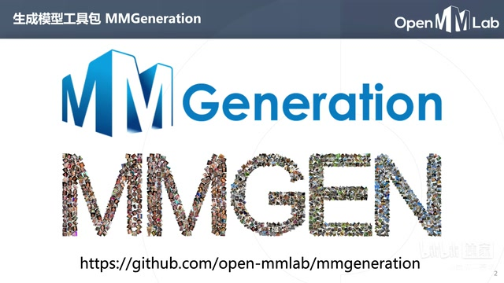
00:00:08–00:00:14 · 画面 00200:00:14–00:00:46 · 画面 003
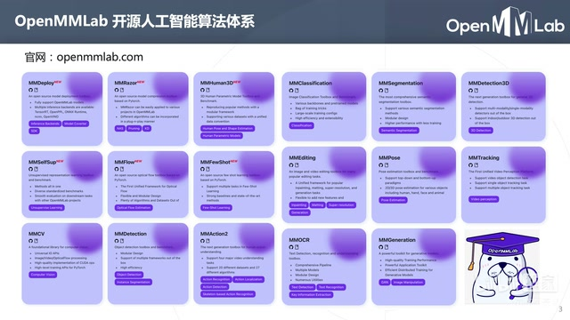
00:00:14–00:00:46 · 画面 003那我们 OpenMMLab 是一套由中国开发者主导有国际影响力的人工智能和计算机视觉开源算法体系，涵盖了计算机视觉常见的所有任务，比如分类、检测、分割、视频理解、动作识别、模型压缩部署。那有些算法库比如说 MMOCR、MMTracking，我已经做了教程，大家可以在 B 站 OpenMMLab 这个号里面看到。今天我们要讲的 MM Generation 也是其中的一个算法库，是专门玩各种生成对抗网络干的。
00:00:46–00:01:27 · 画面 004
00:00:46–00:01:27 · 画面 004我觉得我们 OpenMMLab20 多个算法库最大的价值就是我们的算法研究员已经帮你复现了这些经典算法和前沿算法了，你就不需要再去苦哈哈的去复现了，不用再去看论文再去调参炼丹了，可以直接用我们模型库里面现成的算法，无论是做推理预测还是在自己的数据集上训练都非常的方便。那比如说如果你要写论文要对比不同生成对抗网络干算法的效果，如果用我们 mmgeneration 的话可以轻松获得所有这些算法的结果，无论是。
00:01:27–00:01:36 · 画面 005
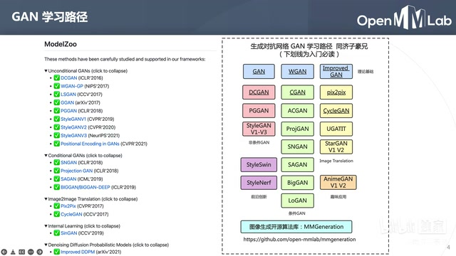
00:01:27–00:01:36 · 画面 005非条件 GAN，条件 GAN，图像转译都是非常方便的，这些算法本身都已经是最经典最顶尖最前沿的算法了，间接相当于帮你画了学习重点，这是我写的干学习路径，很多算法在 MM Generation 里边也是有的。
00:01:36–00:01:40 · 画面 006
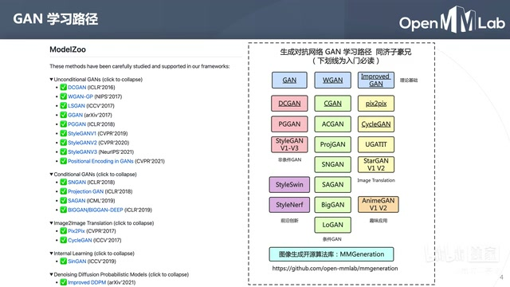
00:01:36–00:01:40 · 画面 00600:01:40–00:01:47 · 画面 007
00:01:40–00:01:47 · 画面 00700:01:47–00:01:51 · 画面 008
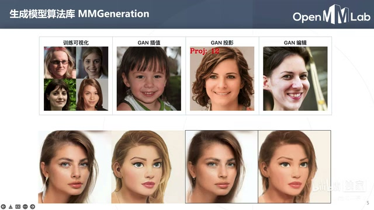
00:01:47–00:01:51 · 画面 008那 MM Generation 所有的代码和模型库都在 GitHub 上开源，如果你觉得还不错可以右上角点个 star，那 star 越多呢我们未来就越优先录制进阶教程，如果遇到任何 bug 或者有任何的修改建议可以提一数和 PR。
00:01:51–00:01:53 · 画面 009
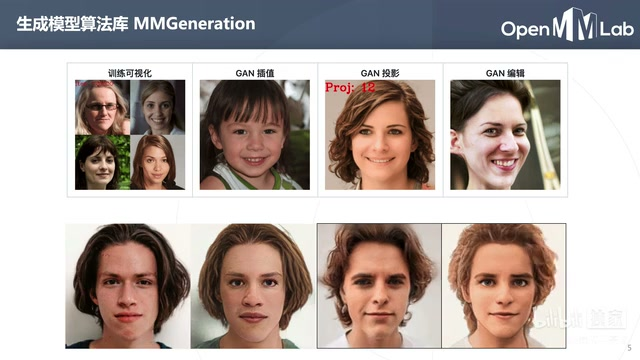
00:01:51–00:01:53 · 画面 00900:01:53–00:02:07 · 画面 010
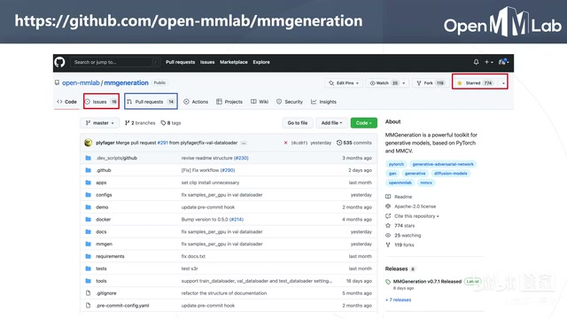
00:01:53–00:02:07 · 画面 01000:02:07–00:02:17 · 画面 011
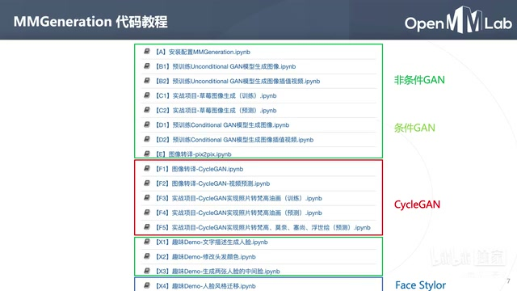
00:02:07–00:02:17 · 画面 011我写了十几个代码教程，其中红框里边的 CycleGAN 还有蓝框里边的人脸风格迁移都已经发布了，可以出门左转看到剩下的绿框里的教程一会儿一个一个来运行，包括非条件 GAN，条件 GAN 和三个趣味案例，你可以调用 MMGeneration 预训练模型库中的模型，也可以在自己的数据上训练自己的 GAN。
00:02:17–00:02:30 · 画面 012
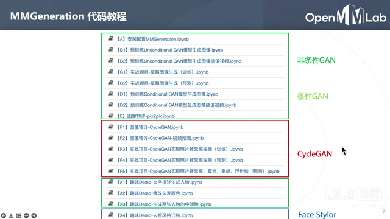
00:02:17–00:02:30 · 画面 01200:02:30–00:02:34 · 画面 013
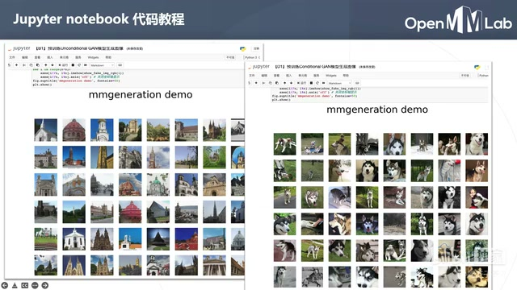
00:02:30–00:02:34 · 画面 01300:02:34–00:02:39 · 画面 014
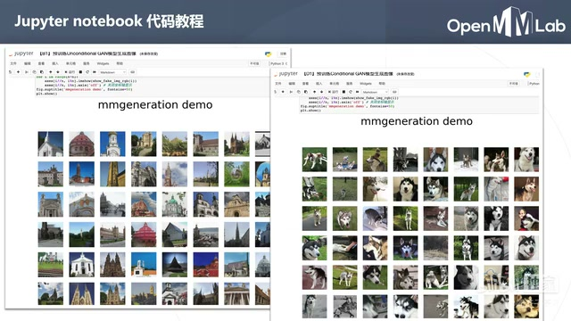
00:02:34–00:02:39 · 画面 014那如何获得这些代码教程呢，只需要扫码关注公众号，回复 mmgeneration 全部是小写两个 m 这个关键词就可以了，那还可以加入大佬达姨的微信群，随时解答你的各种代码和算法问题，那来看一看这些代码跑出来是什么样的效果，那你按照这些代码运行也可以实现同样的效果，首先是 unconditionalGAN 非条件 GAN，比如说著名的 styleGAN。
00:02:39–00:02:58 · 画面 015
00:02:39–00:02:58 · 画面 01500:02:58–00:03:21 · 画面 016
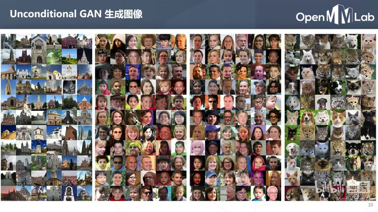
00:02:58–00:03:21 · 画面 016StyleGAN V2,StyleGAN V3 都是 unconditionalGAN 你只需要用大量的真实图像去训练它它就可以生成以假乱真的假图像比如说这些教堂都是真实世界中不存在的是它生成出来的教堂图片还有 StyleGAN 最擅长生成的人脸非常的逼真还有动物脸老虎,猫,狼,豹子都非常的逼真
00:03:21–00:03:42 · 画面 017
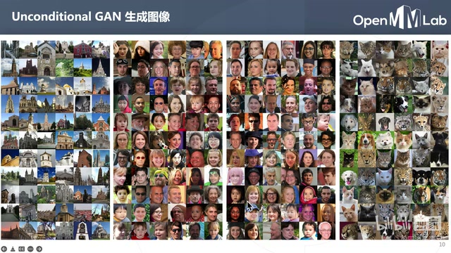
00:03:21–00:03:42 · 画面 017甚至人都看不出来是假的，还有汽车，马和猫这些都是 unconditional GAN 非条件 GAN，特别是 style 干 V2 和 style 干 V3style 干可以对输入的隐层特征进行微调，就可以生成连续的插值渐变视频，非常的酷炫，各种猫，各种人脸，各种教堂，各种汽车。
00:03:42–00:03:43 · 画面 018
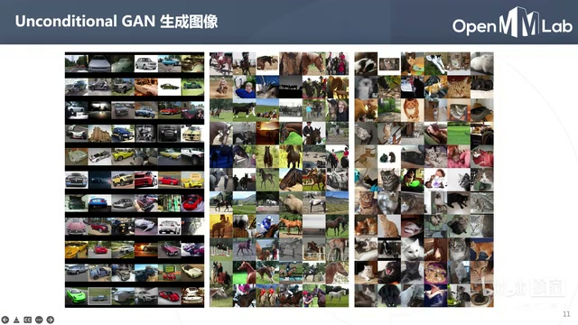
00:03:42–00:03:43 · 画面 01800:03:43–00:03:53 · 画面 019
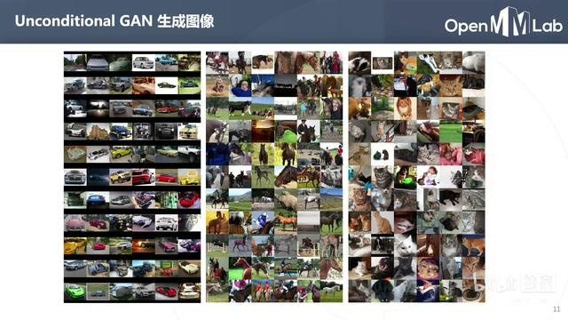
00:03:43–00:03:53 · 画面 01900:03:53–00:03:57 · 画面 020
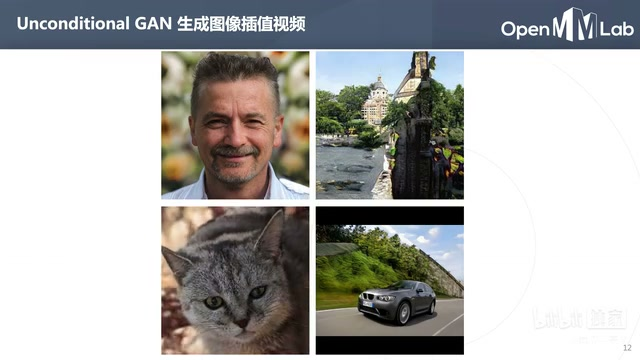
00:03:53–00:03:57 · 画面 02000:03:57–00:04:01 · 画面 021
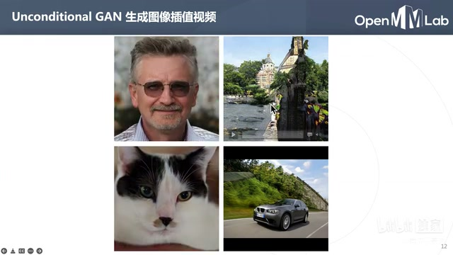
00:03:57–00:04:01 · 画面 02100:04:01–00:04:05 · 画面 022
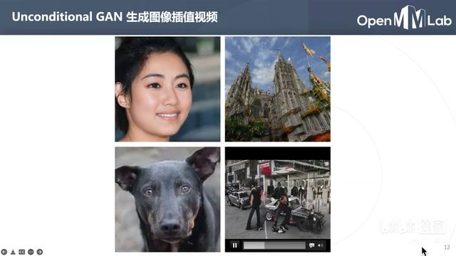
00:04:01–00:04:05 · 画面 02200:04:05–00:04:09 · 画面 023
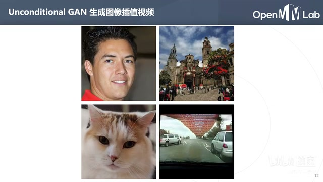
00:04:05–00:04:09 · 画面 02300:04:09–00:04:13 · 画面 024
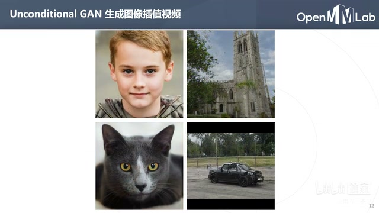
00:04:09–00:04:13 · 画面 024这个视频非常的洗脑，我看了一下午，在代码中你可以手动的去修改它的类别，修改它底层的特征生成视频的图像数和两个张图像之间的过渡间隔都可以设置，我还会带大家用我自己爬取的草莓图片数据集训练一个自己的 StyleGAN V2 模型生成草莓图片。
00:04:13–00:04:17 · 画面 025
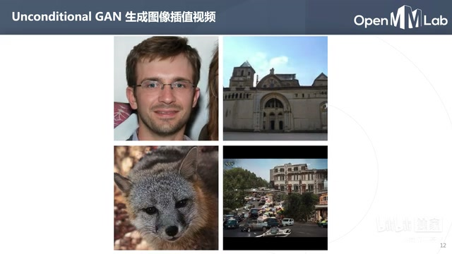
00:04:13–00:04:17 · 画面 02500:04:17–00:04:21 · 画面 026
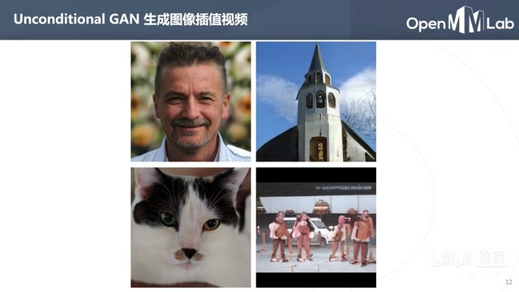
00:04:17–00:04:21 · 画面 02600:04:21–00:04:25 · 画面 027
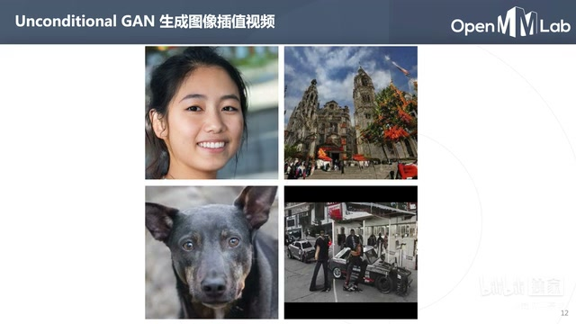
00:04:21–00:04:25 · 画面 02700:04:25–00:04:29 · 画面 028
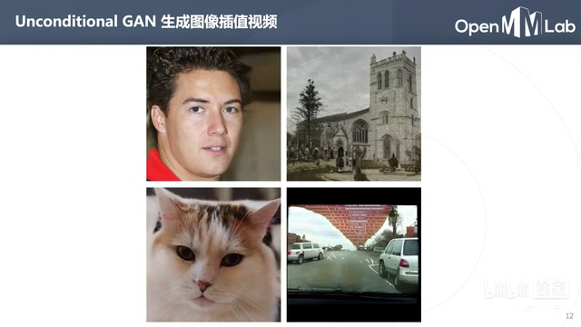
00:04:25–00:04:29 · 画面 02800:04:29–00:04:33 · 画面 029
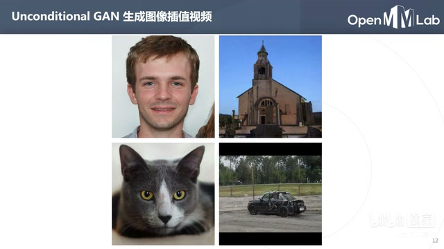
00:04:29–00:04:33 · 画面 02900:04:33–00:04:37 · 画面 030
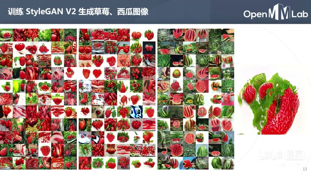
00:04:33–00:04:37 · 画面 03000:04:37–00:04:41 · 画面 031
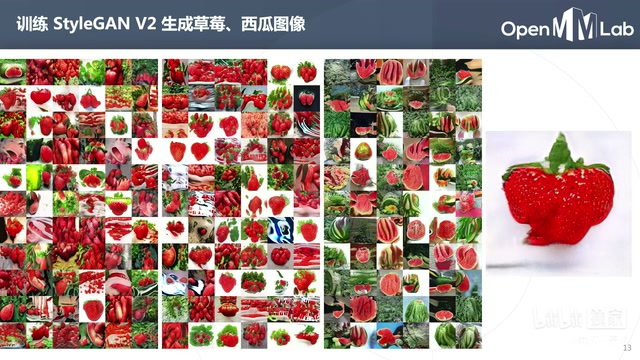
00:04:37–00:04:41 · 画面 031这是生成的草莓图片，然后这是生成的西瓜图片，那以上呢都是 UnconditionalGAN 非条件 GAN 生成图像的效果，那 MMGeneration 还有条件 GANConditionalGAN，比如说谷歌著名的 BigGAN 大 GAN 网络就是条件 GAN，条件 GAN 指的是你可以手动控制生成图像的类别。
00:04:41–00:04:45 · 画面 032
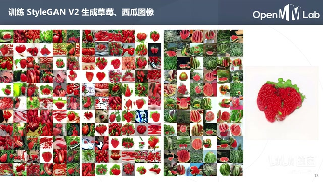
00:04:41–00:04:45 · 画面 03200:04:45–00:04:51 · 画面 033
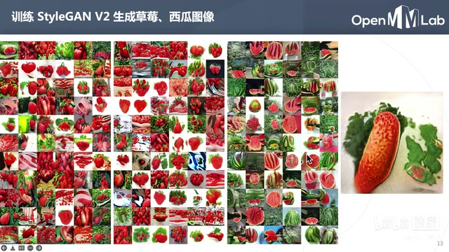
00:04:45–00:04:51 · 画面 03300:04:51–00:05:17 · 画面 034
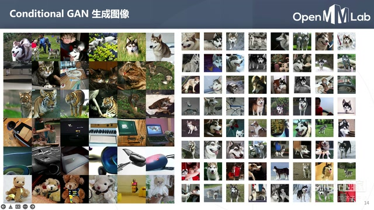
00:04:51–00:05:17 · 画面 034比如说我就想让它生成哈士奇的图片，就想让它生成老虎的图片，就可以用 conditional GAN 生成对抗网络，还有一类重要的应用是 image to image 也叫做 image translation 图像转译，输入一张图像输出另一张对应的图像。
00:05:17–00:05:42 · 画面 035
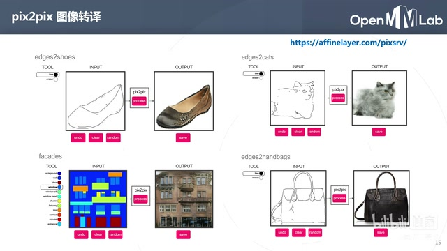
00:05:17–00:05:42 · 画面 035比如说输入简笔画的猫 pix2pix 帮我们转成对应的真猫图片，输入简笔画的鞋 pix2pix 转成对应的真鞋的图片，这些都是在 pix2pix 这篇论文里面提到的，还有比如说输入夏天转成冬天，输入黑夜转成白天，输入野马转成斑马，输入建筑的语义设计图生成真实的建筑外立面图的照片。
00:05:42–00:06:07 · 画面 036
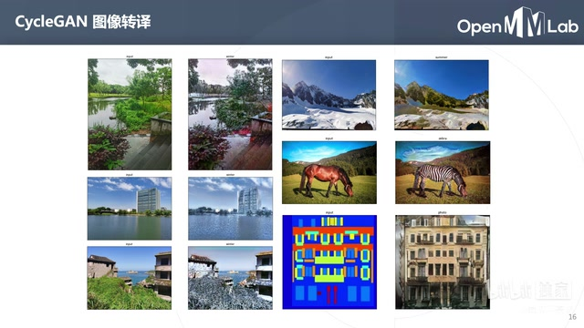
00:05:42–00:06:07 · 画面 036这个叫做 cycle gunpix2pix 和 cycle gun 都是用来解决 image translation 图像转译问题的算法，你也可以用梵高这辈子画的所有画作收集起来放在一个文件夹，把自己手机拍的风景照放在另一个文件夹，用这两个文件夹来训练 cycle gun。
00:06:07–00:06:25 · 画面 037
00:06:07–00:06:25 · 画面 037那就可以实现输入一张手机拍的风景照，比如说左上角这张照片，CycleGun 就可以把它转成梵高的风格，莫奈的印象派风格，还有塞尚的风格，浮世绘的风格，非常的好玩，这是我们一会代码中要做的一个实战项目，这个视频已经发布了。
00:06:25–00:06:33 · 画面 038
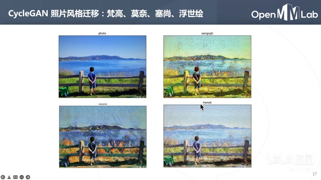
00:06:25–00:06:33 · 画面 03800:06:33–00:06:37 · 画面 039
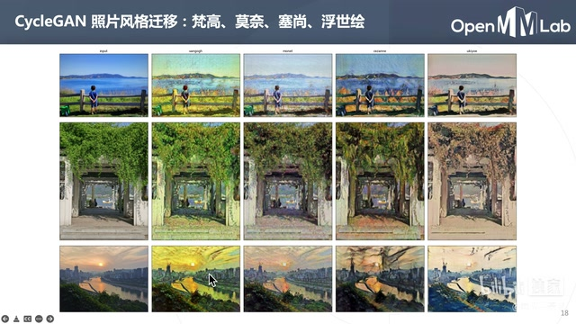
00:06:33–00:06:37 · 画面 03900:06:37–00:06:48 · 画面 040
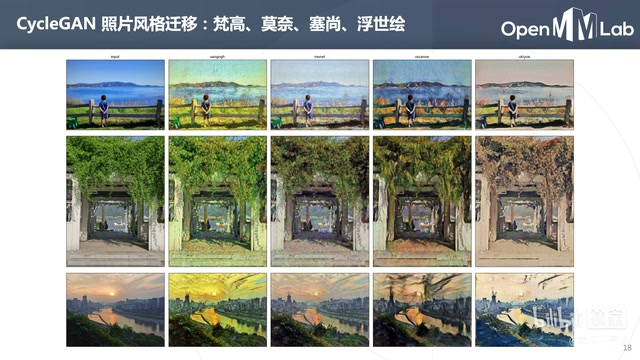
00:06:37–00:06:48 · 画面 040任何一张风景照都可以转成不同画风，这个叫风格迁移，它也是 Image Translation 的一个特例，效果非常的好玩，可以站在科技和人文的十字路口，MM Generation 还提供了一些趣味的案例小脚本，比如说这个 Text to Image，通过文字描述来生成一个图像。
00:06:48–00:06:57 · 画面 041
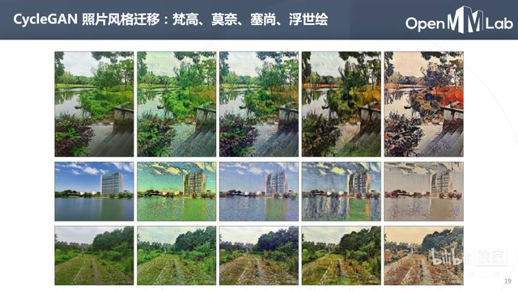
00:06:48–00:06:57 · 画面 04100:06:57–00:07:09 · 画面 042
00:06:57–00:07:09 · 画面 042比如说我告诉这个网络，我要生成一个 a girl with purple hair，一个紫色头发的女生，那么他就生成了一个紫色头发的女生，大眼睛的男生和大鼻子的男生都可以用文字来控制生成图像的效果，这也是现在这个跨模态学习非常火的一个研究领域。
00:07:09–00:07:24 · 画面 043
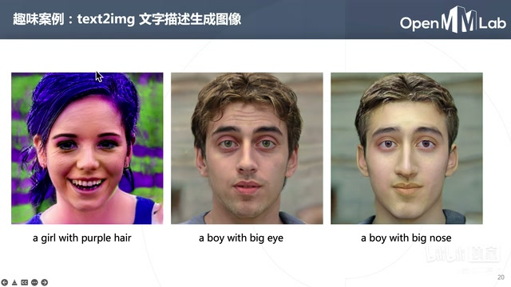
00:07:09–00:07:24 · 画面 04300:07:24–00:07:29 · 画面 044
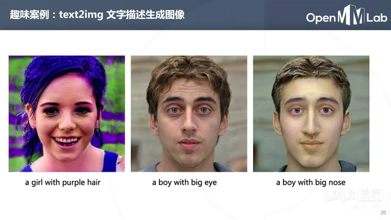
00:07:24–00:07:29 · 画面 04400:07:29–00:07:33 · 画面 045
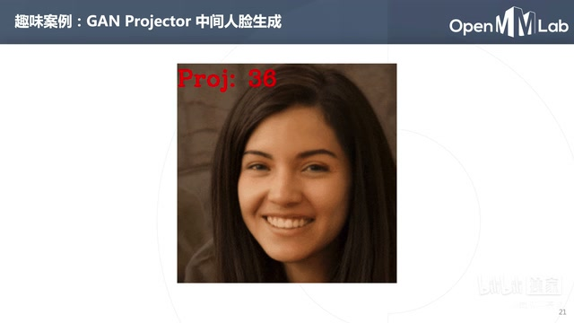
00:07:29–00:07:33 · 画面 045那第二个区别案例呢是叫 GAN Projector 能够生成中间人脸比如说你可以把你的人脸和另外一个人的人脸同时输入进去它就可以生成一张你们两个脸的中间人脸那第三个区别案例叫 Modified SeFa 叫 AI 修改发型那输入一张图像它可以把图像中的人物的发型的颜色和样式进行修改那非常的有趣
00:07:33–00:07:36 · 画面 046
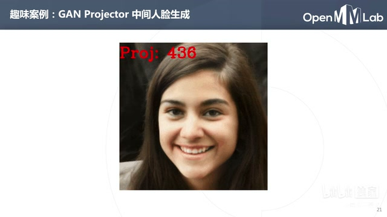
00:07:33–00:07:36 · 画面 04600:07:36–00:07:37 · 画面 047
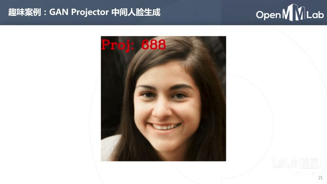
00:07:36–00:07:37 · 画面 04700:07:37–00:07:39 · 画面 048
00:07:37–00:07:39 · 画面 04800:07:39–00:07:43 · 画面 049
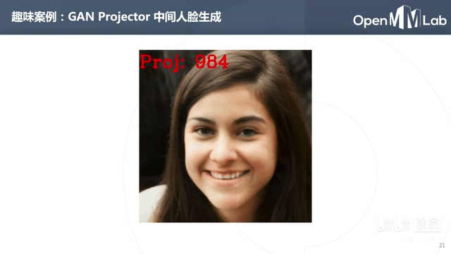
00:07:39–00:07:43 · 画面 04900:07:43–00:07:47 · 画面 050
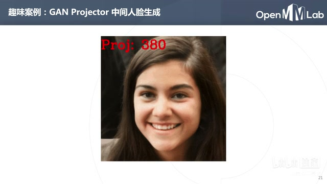
00:07:43–00:07:47 · 画面 05000:07:47–00:07:51 · 画面 051
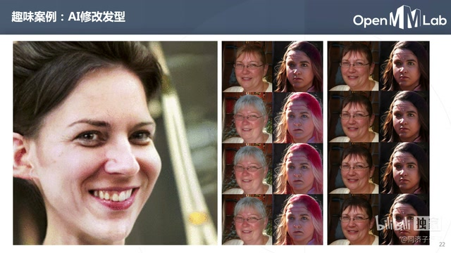
00:07:47–00:07:51 · 画面 05100:07:51–00:07:52 · 画面 052
00:07:51–00:07:52 · 画面 05200:07:52–00:07:56 · 画面 053
00:07:52–00:07:56 · 画面 05300:07:56–00:08:01 · 画面 054
00:07:56–00:08:01 · 画面 05400:08:01–00:08:25 · 画面 055
00:08:01–00:08:25 · 画面 055那第四个趣味案例呢我们已经做过视频了，叫做 Face Styler 人脸风格迁移，输入一张自己的自拍就可以转成不同动漫的风格，那你还可以用自己喜欢的动漫数据集去训练一个自己的人像人脸风格迁移模型，把你自己的自拍转成你喜欢动漫的画风，那在这个案例中呢我们做了一个在线的 demo。
00:08:25–00:08:29 · 画面 056
00:08:25–00:08:29 · 画面 05600:08:29–00:08:45 · 画面 057
00:08:29–00:08:45 · 画面 057然后做了视频，并且把所有的代码放在了 Colab 上，我还提供了一个叫 Webtoon 的数据集，你可以把自己的人脸转成这个 Webtoon 动漫风格的人像，MMGeneration 是我们 OpenMMLab 大家族的一员，它是基于 MMCV 和 PyTorch 实现的，所以它的底层是我们非常熟悉的深度学习框架 PyTorch。
00:08:45–00:08:47 · 画面 058
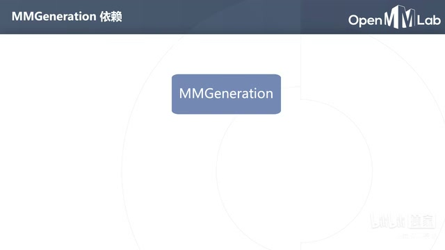
00:08:45–00:08:47 · 画面 05800:08:47–00:08:59 · 画面 059
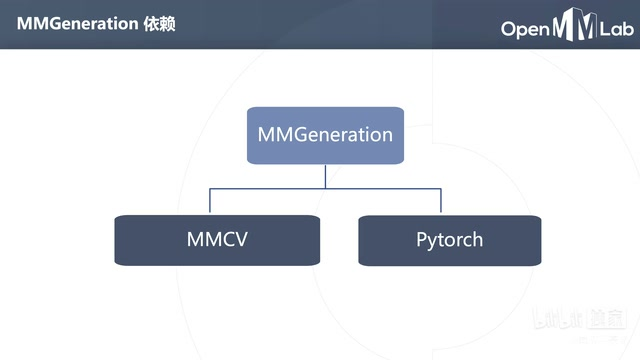
00:08:47–00:08:59 · 画面 05900:08:59–00:09:00 · 画面 060
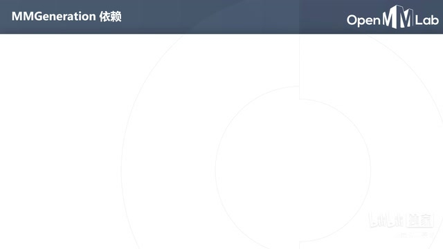
00:08:59–00:09:00 · 画面 06000:09:00–00:09:43 · 画面 061
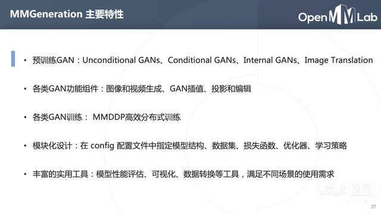
00:09:00–00:09:43 · 画面 061那它支持很多非常不错的特性，首先是有很多预训练的模型，有非条件 GAN，条件 GANinternal GAN 还有 image translation 图像转译，另外呢它还支持比如说模型的性能评估，干里边有。非常多的评价图像生成质量的算法。比如说 FID IS如何去整理干的数据集。如何去高效分布式的训练。特别是在我们 OpenMMLab 中所有的训练都是用 config 文件来配置的。
在 config 文件中你可以指定模型的结构。数据集损失函数优化器学习策略想改什么就可以改什么。像搭积木一样
00:09:43–00:09:55 · 画面 062
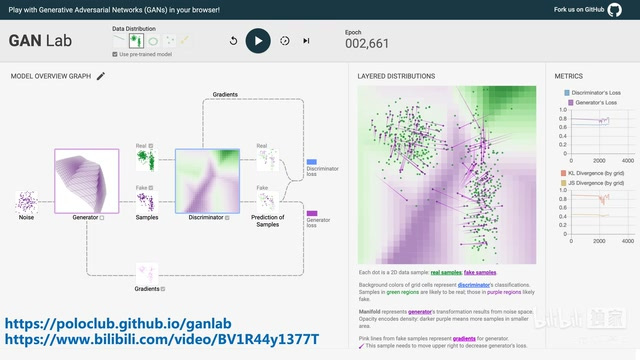
00:09:43–00:09:55 · 画面 062除了代码教程之外。我还做了很多 GAN 的科普视频。比如说这个叫 GANLAB 的在线交互式可视化。帮你理解生成对抗网络背后的原理。
00:09:55–00:09:59 · 画面 063
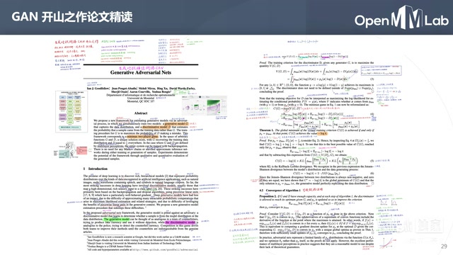
00:09:55–00:09:59 · 画面 063GAN 开山之作的论文精读。还有 PIX2PIX 的论文精读
00:09:59–00:10:01 · 画面 064
00:09:59–00:10:01 · 画面 064CycleGAN 的论文精读
00:10:01–00:10:09 · 画面 065
00:10:01–00:10:09 · 画面 065都已经发布了大家可以去看一看。所以我们的愿景是。一站式帮你解决生成对抗网络的所有问题。
00:10:09–00:10:12 · 画面 066
00:10:09–00:10:12 · 画面 066我们精心设计的算法。
00:10:12–00:10:18 · 画面 067
00:10:12–00:10:18 · 画面 067令开源社区有很大的参与空间。我们非常欢迎你也加入我们 OpenMMLab 社区。
00:10:18–00:10:25 · 画面 068
00:10:18–00:10:25 · 画面 068贡献代码文档翻译教程。结识各路大佬也欢迎和我们成为同事。
00:10:25–00:10:32 · 画面 069
00:10:25–00:10:32 · 画面 069一起拥有温度的 AI让世界充满爱这是简历的投递方式。最后呢
00:10:32–00:10:48 · 画面 070
00:10:32–00:10:48 · 画面 070如果你要用 GAN 来解决图像填充。图像修复超分辨率视频插帧这些问题呢。可以用我们 OpenMMLab 的另外一个算法库。MM Editing它的教程我们也会。在后面陆续发布
00:10:48–00:10:55 · 画面 071
00:10:48–00:10:55 · 画面 071好开始写代码把所有的代码教程。Notebook 文件上传到 JupyterLab或者是云 CPU 平台
00:10:55–00:10:58 · 画面 072
00:10:55–00:10:58 · 画面 07200:10:58–00:10:59 · 画面 073
00:10:58–00:10:59 · 画面 073从上到下按顺序依次运行，先运行 a 安装配置 mmgeneration，每一个 notebook 也是按顺序从上到下依次运行每一个代码块，如何运行就是 shift 加回车运行，也可以点播放按钮运行，首先是安装 pyTouch 和 mmcv4，这也是我们 OpenLive 所有的算法库都。
00:10:59–00:11:03 · 画面 074
00:10:59–00:11:03 · 画面 07400:11:03–00:11:05 · 画面 075
00:11:03–00:11:05 · 画面 07500:11:05–00:11:08 · 画面 076
00:11:05–00:11:08 · 画面 07600:11:08–00:11:10 · 画面 077
00:11:08–00:11:10 · 画面 07700:11:10–00:11:14 · 画面 078
00:11:10–00:11:14 · 画面 07800:11:14–00:11:15 · 画面 079
00:11:14–00:11:15 · 画面 07900:11:15–00:11:16 · 画面 080
00:11:15–00:11:16 · 画面 08000:11:16–00:11:34 · 画面 081
00:11:16–00:11:34 · 画面 081必须安装的底层依赖包，如果这一个代码块长时间卡着运行不动的话，可以点击这个按钮重启 Kernel 后再运行一遍就可以了。安装好这两个包之后再安装其他的工具包，包括进度条图像和视频处理可视化还有 OpenCV，这个速度应该会很快，因为我已经把源换到了清华大学开源软件镜像站。
00:11:34–00:11:35 · 画面 082
00:11:34–00:11:35 · 画面 08200:11:35–00:11:37 · 画面 083
00:11:35–00:11:37 · 画面 08300:11:37–00:11:45 · 画面 084
00:11:37–00:11:45 · 画面 08400:11:45–00:11:46 · 画面 085
00:11:45–00:11:46 · 画面 08500:11:46–00:11:50 · 画面 086
00:11:46–00:11:50 · 画面 086然后呢就是下载 mmgeneration 了，先删掉原有的这个 mmgeneration 文件夹，如果有的话，再从 GitHub 上下载最新的 mmgeneration 源代码，然后进入到这个目录中来安装算法库，这一步时间比较长，大概要两分钟。接下来呢创建一些文件夹，output 文件夹用于存放一会儿的生成结果。
00:11:50–00:11:53 · 画面 087
00:11:50–00:11:53 · 画面 08700:11:53–00:12:01 · 画面 088
00:11:53–00:12:01 · 画面 08800:12:01–00:12:02 · 画面 089
00:12:01–00:12:02 · 画面 08900:12:02–00:12:09 · 画面 090
00:12:02–00:12:09 · 画面 09000:12:09–00:12:11 · 画面 091
00:12:09–00:12:11 · 画面 09100:12:11–00:12:19 · 画面 092
00:12:11–00:12:19 · 画面 092data 文件夹用来存放图像数据集，像下面这些素材都下载到 data 目录下，checkpoints 文件夹用于存放模型的权重文件，而 workdirectories 文件夹用于存放训练结果以及趣味 demo 的输出结果，我已经创建好了像 dataoutputscheckpoints 都创建好了，然后是下载一些图像和视频素材到这个 data 目录下。
00:12:19–00:12:20 · 画面 093
00:12:19–00:12:20 · 画面 09300:12:20–00:12:30 · 画面 094
00:12:20–00:12:30 · 画面 09400:12:30–00:12:31 · 画面 095
00:12:30–00:12:31 · 画面 09500:12:31–00:12:34 · 画面 096
00:12:31–00:12:34 · 画面 09600:12:34–00:12:38 · 画面 097
00:12:34–00:12:38 · 画面 09700:12:38–00:12:40 · 画面 098
00:12:38–00:12:40 · 画面 09800:12:40–00:12:43 · 画面 099
00:12:40–00:12:43 · 画面 09900:12:43–00:12:46 · 画面 100
00:12:43–00:12:46 · 画面 100我已经把我自己收集的一些照片和视频放到了我的网盘里，你可以从我的网盘上下载，用 Linux 里边的 wget 命令输入网盘文件的链接，然后指定保存的结果就把这个文件下载到了 Data 目录下的这么一个目录下路径下，这些图片和视频有一些是我本人亲自拍摄的，有一些是从 Pixel 这个免费图片网站上。
00:12:46–00:12:56 · 画面 101
00:12:46–00:12:56 · 画面 10100:12:56–00:12:57 · 画面 102
00:12:56–00:12:57 · 画面 10200:12:57–00:13:01 · 画面 103
00:12:57–00:13:01 · 画面 10300:13:01–00:13:02 · 画面 104
00:13:01–00:13:02 · 画面 10400:13:02–00:13:06 · 画面 105
00:13:02–00:13:06 · 画面 10500:13:06–00:13:14 · 画面 106
00:13:06–00:13:14 · 画面 10600:13:14–00:13:17 · 画面 107
00:13:14–00:13:17 · 画面 107下载到的最后是检查是否安装成功，如果这些工具包都能正常导入，这几个代码都能够正常运行，没有报错红色的不用管，红色的是 warning 不是报错，并且最后生成一个 43256256V 的张量。
00:13:17–00:13:25 · 画面 108
00:13:17–00:13:25 · 画面 10800:13:25–00:13:27 · 画面 109
00:13:25–00:13:27 · 画面 10900:13:27–00:13:28 · 画面 110
00:13:27–00:13:28 · 画面 11000:13:28–00:13:31 · 画面 111
00:13:28–00:13:31 · 画面 11100:13:31–00:13:38 · 画面 112
00:13:31–00:13:38 · 画面 112就像现在这样就证明你安装成功了，A 代码就运行完毕，必须先跑通 A 代码才能运行后边的所有代码，所以 A 代码非常的重要，好来看 B1 代码，B1 代码是调用 M1 Generation 预训练的 Unconditional GAN。
00:13:38–00:13:40 · 画面 113
00:13:38–00:13:40 · 画面 11300:13:40–00:13:44 · 画面 114
00:13:40–00:13:44 · 画面 11400:13:44–00:13:45 · 画面 115
00:13:44–00:13:45 · 画面 11500:13:45–00:13:47 · 画面 116
00:13:45–00:13:47 · 画面 11600:13:47–00:13:48 · 画面 117
00:13:47–00:13:48 · 画面 11700:13:48–00:13:51 · 画面 118
00:13:48–00:13:51 · 画面 11800:13:51–00:13:54 · 画面 119
00:13:51–00:13:54 · 画面 119来进行推理预测首先还是进入 MM Generation 的主目录它支持的 UnconditionalGAN 模型有很多我们用到的主要是 CellGAN V2 和 CellGAN V3 你也可以换成其他的模型这里有两种执行推理预测的方法可以用命令行方式调用
00:13:54–00:13:58 · 画面 120
00:13:54–00:13:58 · 画面 12000:13:58–00:13:59 · 画面 121
00:13:58–00:13:59 · 画面 12100:13:59–00:14:03 · 画面 122
00:13:59–00:14:03 · 画面 12200:14:03–00:14:06 · 画面 123
00:14:03–00:14:06 · 画面 12300:14:06–00:14:10 · 画面 124
00:14:06–00:14:10 · 画面 12400:14:10–00:14:12 · 画面 125
00:14:10–00:14:12 · 画面 125也可以用 Python API 方式调用如果用命令行方式调用的话只需要运行 demo 目录下的 unconditional demo 脚本就可以了比如说我们来运行一个教堂生成教堂图像的脚本那么先指定模型的配置文件叫 config 文件再指定模型的 checkpoints 权重文件注意这两个
00:14:12–00:14:13 · 画面 126
00:14:12–00:14:13 · 画面 12600:14:13–00:14:15 · 画面 127
00:14:13–00:14:15 · 画面 12700:14:15–00:14:20 · 画面 128
00:14:15–00:14:20 · 画面 12800:14:20–00:14:21 · 画面 129
00:14:20–00:14:21 · 画面 12900:14:21–00:14:26 · 画面 130
00:14:21–00:14:26 · 画面 13000:14:26–00:14:28 · 画面 131
00:14:26–00:14:28 · 画面 13100:14:28–00:14:32 · 画面 132
00:14:28–00:14:32 · 画面 13200:14:32–00:14:38 · 画面 133
00:14:32–00:14:38 · 画面 133文件要对应，要是同一个模型的文件才行，指定生成的图像个数，指定保存的路径和运行的设备，那哪里能看到这个 config 配置文件和 checkpoint 的权重文件呢，可以到 mmgeneration 的官网底下有一个 modelzoo，比如说我们可以点击 StyleGAN v2
00:14:38–00:14:39 · 画面 134
00:14:38–00:14:39 · 画面 13400:14:39–00:14:41 · 画面 135
00:14:39–00:14:41 · 画面 13500:14:41–00:14:43 · 画面 136
00:14:41–00:14:43 · 画面 13600:14:43–00:14:46 · 画面 137
00:14:43–00:14:46 · 画面 13700:14:46–00:14:47 · 画面 138
00:14:46–00:14:47 · 画面 13800:14:47–00:14:48 · 画面 139
00:14:47–00:14:48 · 画面 13900:14:48–00:14:52 · 画面 140
00:14:48–00:14:52 · 画面 14000:14:52–00:14:53 · 画面 141
00:14:52–00:14:53 · 画面 14100:14:53–00:14:54 · 画面 142
00:14:53–00:14:54 · 画面 14200:14:54–00:14:58 · 画面 143
00:14:54–00:14:58 · 画面 143那这里有他论文的摘要和一些插图那这个就是 config 文件这个就是 checkpoints 文件那 checkpoints 文件直接右键复制链接地址粘贴那就是这个.pth 的模型权重文件那 config 文件怎么看呢只需要复制它的路径点开它然后复制这个粘贴过去就可以了
00:14:58–00:15:01 · 画面 144
00:14:58–00:15:01 · 画面 14400:15:01–00:15:02 · 画面 145
00:15:01–00:15:02 · 画面 14500:15:02–00:15:06 · 画面 146
00:15:02–00:15:06 · 画面 14600:15:06–00:15:08 · 画面 147
00:15:06–00:15:08 · 画面 14700:15:08–00:15:11 · 画面 148
00:15:08–00:15:11 · 画面 14800:15:11–00:15:13 · 画面 149
00:15:11–00:15:13 · 画面 14900:15:13–00:15:16 · 画面 150
00:15:13–00:15:16 · 画面 15000:15:16–00:15:19 · 画面 151
00:15:16–00:15:19 · 画面 15100:15:19–00:15:21 · 画面 152
00:15:19–00:15:21 · 画面 15200:15:21–00:15:29 · 画面 153
00:15:21–00:15:29 · 画面 153它因为下载下来的 MMGeneration 目录 config 目录下就包含了这个.py 文件所以不需要从网盘下载直接指定它的目录就可以了好那这是 config 文件的路径这是 checkpoints 文件的地址是一个.pth 的文件注意它俩要一一对应一个模型一个 config 和一个 checkpoints 权重文件它们都是同一个模型的
00:15:29–00:15:30 · 画面 154
00:15:29–00:15:30 · 画面 15400:15:30–00:15:32 · 画面 155
00:15:30–00:15:32 · 画面 15500:15:32–00:15:35 · 画面 156
00:15:32–00:15:35 · 画面 15600:15:35–00:15:37 · 画面 157
00:15:35–00:15:37 · 画面 15700:15:37–00:15:41 · 画面 158
00:15:37–00:15:41 · 画面 15800:15:41–00:15:44 · 画面 159
00:15:41–00:15:44 · 画面 15900:15:44–00:15:47 · 画面 160
00:15:44–00:15:47 · 画面 16000:15:47–00:15:49 · 画面 161
00:15:47–00:15:49 · 画面 16100:15:49–00:15:50 · 画面 162
00:15:49–00:15:50 · 画面 16200:15:50–00:15:51 · 画面 163
00:15:50–00:15:51 · 画面 163那运行一下，这是 Cellgun V2 生成教堂的，你也可以把模型换成生成汽车的、生成马的、生成猫的、生成人像的。这以上是 Cellgun V2，那还可以跑 Cellgun V3Cellgun V3 生成人脸就更加逼真，生成动物脸也很逼真。那我们来看一下效果吧。效果的话就在 Output 子目录下，它生成到了 B1 人间夹里。
00:15:51–00:15:55 · 画面 164
00:15:51–00:15:55 · 画面 16400:15:55–00:15:57 · 画面 165
00:15:55–00:15:57 · 画面 16500:15:57–00:15:59 · 画面 166
00:15:57–00:15:59 · 画面 16600:15:59–00:16:00 · 画面 167
00:15:59–00:16:00 · 画面 16700:16:00–00:16:03 · 画面 168
00:16:00–00:16:03 · 画面 16800:16:03–00:16:08 · 画面 169
00:16:03–00:16:08 · 画面 16900:16:08–00:16:10 · 画面 170
00:16:08–00:16:10 · 画面 17000:16:10–00:16:14 · 画面 171
00:16:10–00:16:14 · 画面 17100:16:14–00:16:15 · 画面 172
00:16:14–00:16:15 · 画面 17200:16:15–00:16:17 · 画面 173
00:16:15–00:16:17 · 画面 173好 ，这些就是我们跑这几个代码生成的结果看看教堂 ，这是教堂的结果，你会发现这里面很多图片中心都有一个叫 Shutterstock 的水印，这是因为 Shutterstock 自己就是一个图像的网站，训练 StyleGAN V2 的图像很多都是从这个网站上爬取到的，所以 GAN 也学习到了这个水印的特性
00:16:17–00:16:21 · 画面 174
00:16:17–00:16:21 · 画面 17400:16:21–00:16:25 · 画面 175
00:16:21–00:16:25 · 画面 17500:16:25–00:16:29 · 画面 176
00:16:25–00:16:29 · 画面 17600:16:29–00:16:33 · 画面 177
00:16:29–00:16:33 · 画面 17700:16:33–00:16:34 · 画面 178
00:16:33–00:16:34 · 画面 17800:16:34–00:16:35 · 画面 179
00:16:34–00:16:35 · 画面 17900:16:35–00:16:37 · 画面 180
00:16:35–00:16:37 · 画面 18000:16:37–00:16:42 · 画面 181
00:16:37–00:16:42 · 画面 181它生成的图片就会带水印，但是它要么有水印，水印就非常明显，要没有水印的话就一点都没有。所以不会出现每张图都有水印的情况。你看这个教堂非常的逼真，这是俄罗斯式的教堂，还有哥特式的教堂。这些教堂都是在世界上并不存在的，但是 GAN 能给它生成出来。看看这个汽车。
00:16:42–00:16:43 · 画面 182
00:16:42–00:16:43 · 画面 18200:16:43–00:16:49 · 画面 183
00:16:43–00:16:49 · 画面 18300:16:49–00:16:51 · 画面 184
00:16:49–00:16:51 · 画面 18400:16:51–00:16:55 · 画面 185
00:16:51–00:16:55 · 画面 18500:16:55–00:16:58 · 画面 186
00:16:55–00:16:58 · 画面 18600:16:58–00:16:59 · 画面 187
00:16:58–00:16:59 · 画面 18700:16:59–00:17:00 · 画面 188
00:16:59–00:17:00 · 画面 18800:17:00–00:17:02 · 画面 189
00:17:00–00:17:02 · 画面 18900:17:02–00:17:04 · 画面 190
00:17:02–00:17:04 · 画面 19000:17:04–00:17:05 · 画面 191
00:17:04–00:17:05 · 画面 19100:17:05–00:17:07 · 画面 192
00:17:05–00:17:07 · 画面 19200:17:07–00:17:08 · 画面 193
00:17:07–00:17:08 · 画面 19300:17:08–00:17:10 · 画面 194
00:17:08–00:17:10 · 画面 19400:17:10–00:17:14 · 画面 195
00:17:10–00:17:14 · 画面 195这些汽车也在世界上并不存在，还有老爷车它也能生成出来。有一些结果生成的会比较拉垮，而有一些却生成的非常逼真。像这张就比较拉垮了，这张也不太行，但是也有很多非常行的。这张就可以，我们看看人脸的 Style Gun V2 的人脸和 V3 的人脸生成的都非常的逼真。
00:17:14–00:17:15 · 画面 196
00:17:14–00:17:15 · 画面 19600:17:15–00:17:19 · 画面 197
00:17:15–00:17:19 · 画面 19700:17:19–00:17:21 · 画面 198
00:17:19–00:17:21 · 画面 19800:17:21–00:17:24 · 画面 199
00:17:21–00:17:24 · 画面 19900:17:24–00:17:28 · 画面 200
00:17:24–00:17:28 · 画面 20000:17:28–00:17:32 · 画面 201
00:17:28–00:17:32 · 画面 20100:17:32–00:17:35 · 画面 202
00:17:32–00:17:35 · 画面 20200:17:35–00:17:39 · 画面 203
00:17:35–00:17:39 · 画面 20300:17:39–00:17:42 · 画面 204
00:17:39–00:17:42 · 画面 20400:17:42–00:17:46 · 画面 205
00:17:42–00:17:46 · 画面 205嘴唇甚至牙齿、胡子都细节非常的逼真。当然这里面不排除有一些人脸确实也比较糟糕，也比较拉垮。所以看到那种非常古怪的人脸不要太惊讶。这张就有点有点诡异了，不要太惊讶。那么它确实是有可能会生成不好的，但是大部分生成的都非常的不错，而且有不同的人种、不同的肤色、不同的性别。
00:17:46–00:17:48 · 画面 206
00:17:46–00:17:48 · 画面 20600:17:48–00:17:52 · 画面 207
00:17:48–00:17:52 · 画面 20700:17:52–00:17:56 · 画面 208
00:17:52–00:17:56 · 画面 20800:17:56–00:18:00 · 画面 209
00:17:56–00:18:00 · 画面 20900:18:00–00:18:04 · 画面 210
00:18:00–00:18:04 · 画面 21000:18:04–00:18:05 · 画面 211
00:18:04–00:18:05 · 画面 21100:18:05–00:18:07 · 画面 212
00:18:05–00:18:07 · 画面 21200:18:07–00:18:11 · 画面 213
00:18:07–00:18:11 · 画面 21300:18:11–00:18:14 · 画面 214
00:18:11–00:18:14 · 画面 21400:18:14–00:18:17 · 画面 215
00:18:14–00:18:17 · 画面 215不同的年龄这些人脸在世界上并不真实存在它是一个假人脸这是用命令行方式调用你也可以用 Python API 的方式调用那就首先导入工具包然后载入模型载入模型时候要指定
00:18:17–00:18:18 · 画面 216
00:18:17–00:18:18 · 画面 21600:18:18–00:18:22 · 画面 217
00:18:18–00:18:22 · 画面 21700:18:22–00:18:24 · 画面 218
00:18:22–00:18:24 · 画面 21800:18:24–00:18:26 · 画面 219
00:18:24–00:18:26 · 画面 21900:18:26–00:18:28 · 画面 220
00:18:26–00:18:28 · 画面 22000:18:28–00:18:30 · 画面 221
00:18:28–00:18:30 · 画面 22100:18:30–00:18:31 · 画面 222
00:18:30–00:18:31 · 画面 22200:18:31–00:18:34 · 画面 223
00:18:31–00:18:34 · 画面 22300:18:34–00:18:41 · 画面 224
00:18:34–00:18:41 · 画面 224Config 配置文件的路径和 Checkpoints 权重文件的路径和刚刚命令行里面是一样的你可以在以下的这几个代码块里面任选一个运行有教堂 汽车 人脸的我这里选教堂的用 init_model 函数初始化模型传入配置文件和模型权重文件这里可以指定生成多少张图像比如说我想生成 64 张图像拼成一个 8x8 的格子图
00:18:41–00:18:44 · 画面 225
00:18:41–00:18:44 · 画面 22500:18:44–00:18:47 · 画面 226
00:18:44–00:18:47 · 画面 22600:18:47–00:18:51 · 画面 227
00:18:47–00:18:51 · 画面 22700:18:51–00:18:53 · 画面 228
00:18:51–00:18:53 · 画面 22800:18:53–00:19:14 · 画面 229
00:18:53–00:19:14 · 画面 229就指定 n 等于 8 然后用 sample_unconditional_model 这个函数传入初始化好的模型和要生成的图像个数它就会生成一个 64 张 256x256x3 通道的彩色图像那我们可以把某一张图像
00:19:14–00:19:15 · 画面 230
00:19:14–00:19:15 · 画面 23000:19:15–00:19:17 · 画面 231
00:19:15–00:19:17 · 画面 23100:19:17–00:19:23 · 画面 232
00:19:17–00:19:23 · 画面 23200:19:23–00:19:24 · 画面 233
00:19:23–00:19:24 · 画面 23300:19:24–00:19:27 · 画面 234
00:19:24–00:19:27 · 画面 234展示出来比如说把所引为 41 的这张图展示出来分别抽取它的 RGB 三通道然后组装成一个新图像然后归一化为 0-255 的 Uint8 整数的一个自然图像那这就是所引为 41 的图像是一个教堂那我也写了一个可视化的模板可以 N 行 N 列展示生成的图像那它现在这个图就是一个 8 行 8 列展示 64 个假教堂的效果
00:19:27–00:19:30 · 画面 235
00:19:27–00:19:30 · 画面 23500:19:30–00:19:36 · 画面 236
00:19:30–00:19:36 · 画面 23600:19:36–00:19:38 · 画面 237
00:19:36–00:19:38 · 画面 23700:19:38–00:19:40 · 画面 238
00:19:38–00:19:40 · 画面 23800:19:40–00:19:44 · 画面 239
00:19:40–00:19:44 · 画面 23900:19:44–00:19:48 · 画面 240
00:19:44–00:19:48 · 画面 24000:19:48–00:19:51 · 画面 241
00:19:48–00:19:51 · 画面 24100:19:51–00:19:53 · 画面 242
00:19:51–00:19:53 · 画面 24200:19:53–00:19:57 · 画面 243
00:19:53–00:19:57 · 画面 243那这个教堂呢你看有哥特式的有俄罗斯式的还有这种尖顶的尖塔的风格各异而且生成的效果都非常的逼真甚至蓝天草地也非常的契合所以这是一个非常强大的算法好那这是 B1 代码我们来看 B2 代码
00:19:57–00:19:59 · 画面 244
00:19:57–00:19:59 · 画面 24400:19:59–00:20:00 · 画面 245
00:19:59–00:20:00 · 画面 24500:20:00–00:20:02 · 画面 246
00:20:00–00:20:02 · 画面 24600:20:02–00:20:12 · 画面 247
00:20:02–00:20:12 · 画面 24700:20:12–00:20:13 · 画面 248
00:20:12–00:20:13 · 画面 24800:20:13–00:20:16 · 画面 249
00:20:13–00:20:16 · 画面 24900:20:16–00:20:18 · 画面 250
00:20:16–00:20:18 · 画面 25000:20:18–00:20:19 · 画面 251
00:20:18–00:20:19 · 画面 25100:20:19–00:20:22 · 画面 252
00:20:19–00:20:22 · 画面 252B2 代码是在 B1 代码的基础上生成图像插值视频首先还是进入 MMGeneration 的主目录生成图像插值视频用到的是 apps 目录下的 interpretSample.py 脚本
00:20:22–00:20:23 · 画面 253
00:20:22–00:20:23 · 画面 25300:20:23–00:20:31 · 画面 254
00:20:23–00:20:31 · 画面 25400:20:31–00:20:32 · 画面 255
00:20:31–00:20:32 · 画面 25500:20:32–00:20:37 · 画面 256
00:20:32–00:20:37 · 画面 25600:20:37–00:20:38 · 画面 257
00:20:37–00:20:38 · 画面 25700:20:38–00:20:43 · 画面 258
00:20:38–00:20:43 · 画面 258比如说生成一个教堂图像的叉直视频，就先传入 Config 配置文件、Checkpoints 权重文件，然后指定要导出视频，指定保存视频的路径，然后要几张图片之间来回切换是 7 张图片，每两张图片之间的间隔。
00:20:43–00:20:44 · 画面 259
00:20:43–00:20:44 · 画面 25900:20:44–00:20:46 · 画面 260
00:20:44–00:20:46 · 画面 26000:20:46–00:20:47 · 画面 261
00:20:46–00:20:47 · 画面 26100:20:47–00:20:50 · 画面 262
00:20:47–00:20:50 · 画面 26200:20:50–00:20:54 · 画面 263
00:20:50–00:20:54 · 画面 26300:20:54–00:20:58 · 画面 264
00:20:54–00:20:58 · 画面 26400:20:58–00:21:02 · 画面 265
00:20:58–00:21:02 · 画面 265它的过渡要经过几个过渡态呢，是 150 个。这些都可以手动修改。那么在它哪一个 Latent Encoding 的特征空间进行修改呢，是在 W 空间。那么这些都是 StyleGAN 论文里边的一些细节，你可以参考它的论文来修改它的结果。可以生成教堂的插值视频、汽车的插值视频、人脸的插值视频、动物脸的插值视频，还有 StyleGAN V3 的人脸插值视频。好 ，那我们看看效果吧。
00:21:02–00:21:07 · 画面 266
00:21:02–00:21:07 · 画面 26600:21:07–00:21:08 · 画面 267
00:21:07–00:21:08 · 画面 26700:21:08–00:21:14 · 画面 268
00:21:08–00:21:14 · 画面 26800:21:14–00:21:18 · 画面 269
00:21:14–00:21:18 · 画面 26900:21:18–00:21:20 · 画面 270
00:21:18–00:21:20 · 画面 27000:21:20–00:21:21 · 画面 271
00:21:20–00:21:21 · 画面 27100:21:21–00:21:24 · 画面 272
00:21:21–00:21:24 · 画面 27200:21:24–00:21:26 · 画面 273
00:21:24–00:21:26 · 画面 273就在这个 output 目录下的 B2 这四个文件夹，我已经把它下载下来了，直接在我本地看吧。比如说我们先看一个动物脸的吧，它是把六张假图像的中间态进行了插值。再看一个人脸的效果，非常的酷炫。看看教堂的。
00:21:26–00:21:28 · 画面 274
00:21:26–00:21:28 · 画面 27400:21:28–00:21:30 · 画面 275
00:21:28–00:21:30 · 画面 27500:21:30–00:21:31 · 画面 276
00:21:30–00:21:31 · 画面 27600:21:31–00:21:33 · 画面 277
00:21:31–00:21:33 · 画面 27700:21:33–00:21:35 · 画面 278
00:21:33–00:21:35 · 画面 27800:21:35–00:21:36 · 画面 279
00:21:35–00:21:36 · 画面 27900:21:36–00:21:37 · 画面 280
00:21:36–00:21:37 · 画面 28000:21:37–00:21:38 · 画面 281
00:21:37–00:21:38 · 画面 28100:21:38–00:21:39 · 画面 282
00:21:38–00:21:39 · 画面 28200:21:39–00:21:41 · 画面 283
00:21:39–00:21:41 · 画面 28300:21:41–00:21:45 · 画面 284
00:21:41–00:21:45 · 画面 28400:21:45–00:21:49 · 画面 285
00:21:45–00:21:49 · 画面 28500:21:49–00:21:52 · 画面 286
00:21:49–00:21:52 · 画面 28600:21:52–00:21:55 · 画面 287
00:21:52–00:21:55 · 画面 28700:21:55–00:21:56 · 画面 288
00:21:55–00:21:56 · 画面 28800:21:56–00:21:57 · 画面 289
00:21:56–00:21:57 · 画面 28900:21:57–00:21:59 · 画面 290
00:21:57–00:21:59 · 画面 29000:21:59–00:22:03 · 画面 291
00:21:59–00:22:03 · 画面 29100:22:03–00:22:07 · 画面 292
00:22:03–00:22:07 · 画面 29200:22:07–00:22:11 · 画面 293
00:22:07–00:22:11 · 画面 29300:22:11–00:22:12 · 画面 294
00:22:11–00:22:12 · 画面 29400:22:12–00:22:14 · 画面 295
00:22:12–00:22:14 · 画面 29500:22:14–00:22:16 · 画面 296
00:22:14–00:22:16 · 画面 296如果你是学建筑专业的，学设计专业的，这些人工智能生成的图会给你无限的灵感。看这个视频能看一下午。再看看汽车的汽车的，就有点变形金刚的感觉了。值得注意的是，它生成的汽车图像也很多，会出现人的身影，但是这个人的效果并不好，所以这个网络还有很大的改进空间。B2 代码也跑完了。
00:22:16–00:22:19 · 画面 297
00:22:16–00:22:19 · 画面 29700:22:19–00:22:23 · 画面 298
00:22:19–00:22:23 · 画面 29800:22:23–00:22:27 · 画面 299
00:22:23–00:22:27 · 画面 29900:22:27–00:22:31 · 画面 300
00:22:27–00:22:31 · 画面 30000:22:31–00:22:35 · 画面 301
00:22:31–00:22:35 · 画面 30100:22:35–00:22:38 · 画面 302
00:22:35–00:22:38 · 画面 30200:22:38–00:22:40 · 画面 303
00:22:38–00:22:40 · 画面 30300:22:40–00:22:42 · 画面 304
00:22:40–00:22:42 · 画面 30400:22:42–00:22:46 · 画面 305
00:22:42–00:22:46 · 画面 30500:22:46–00:22:50 · 画面 306
00:22:46–00:22:50 · 画面 30600:22:50–00:22:54 · 画面 307
00:22:50–00:22:54 · 画面 30700:22:54–00:22:56 · 画面 308
00:22:54–00:22:56 · 画面 30800:22:56–00:22:58 · 画面 309
00:22:56–00:22:58 · 画面 30900:22:58–00:23:02 · 画面 310
00:22:58–00:23:02 · 画面 31000:23:02–00:23:03 · 画面 311
00:23:02–00:23:03 · 画面 31100:23:03–00:23:06 · 画面 312
00:23:03–00:23:06 · 画面 31200:23:06–00:23:09 · 画面 313
00:23:06–00:23:09 · 画面 31300:23:09–00:23:13 · 画面 314
00:23:09–00:23:13 · 画面 314B1 和 B2 是用 MM Generation 预训练好的 UnconditionalGAN 非条件 GAN 来执行推理预测。接下来的 C1 和 C2 是用我们自己的数据集来训练一个自己的 UnconditionalGAN。特别的是 StyleGAN-V2，那就是训练 StyleGAN-V2 生成草莓图像。我们的数据集都是草莓的真图片，那么用这些真图片去训练 StyleGAN-V2，让它生成假草莓的图像。
00:23:13–00:23:19 · 画面 315
00:23:13–00:23:19 · 画面 31500:23:19–00:23:20 · 画面 316
00:23:19–00:23:20 · 画面 31600:23:20–00:23:21 · 画面 317
00:23:20–00:23:21 · 画面 31700:23:21–00:23:22 · 画面 318
00:23:21–00:23:22 · 画面 31800:23:22–00:23:27 · 画面 319
00:23:22–00:23:27 · 画面 31900:23:27–00:23:38 · 画面 320
00:23:27–00:23:38 · 画面 32000:23:38–00:23:39 · 画面 321
00:23:38–00:23:39 · 画面 321那学会了这一套，你也可以把草莓数据集换成你自己的数据集，比如说换成古典花瓶的数据集，换成甲虫的数据集，甚至古代钱币的数据集。你就可以想让它生成啥，它就能生成啥。首先还是第一步，先进入 MNGeneration 主目录，下载下来这个数据集。这个数据集我已经帮你做好了，是我写了一个爬虫从网上爬的图片。看一下这个数据集。
00:23:39–00:23:53 · 画面 322
00:23:39–00:23:53 · 画面 32200:23:53–00:23:56 · 画面 323
00:23:53–00:23:56 · 画面 32300:23:56–00:24:00 · 画面 324
00:23:56–00:24:00 · 画面 32400:24:00–00:24:03 · 画面 325
00:24:00–00:24:03 · 画面 32500:24:03–00:24:06 · 画面 326
00:24:03–00:24:06 · 画面 32600:24:06–00:24:08 · 画面 327
00:24:06–00:24:08 · 画面 327在 Data 目录下的 Strawberry 有 JPG 格式的，有 WEBP 格式的，都是可以的，都是常见的图像格式，都是草莓的图片。解压下来就得到 Strawberry 文件夹。
00:24:08–00:24:09 · 画面 328
00:24:08–00:24:09 · 画面 32800:24:09–00:24:11 · 画面 329
00:24:09–00:24:11 · 画面 32900:24:11–00:24:12 · 画面 330
00:24:11–00:24:12 · 画面 33000:24:12–00:24:14 · 画面 331
00:24:12–00:24:14 · 画面 33100:24:14–00:24:16 · 画面 332
00:24:14–00:24:16 · 画面 33200:24:16–00:24:18 · 画面 333
00:24:16–00:24:18 · 画面 33300:24:18–00:24:19 · 画面 334
00:24:18–00:24:19 · 画面 33400:24:19–00:24:21 · 画面 335
00:24:19–00:24:21 · 画面 33500:24:21–00:24:24 · 画面 336
00:24:21–00:24:24 · 画面 33600:24:24–00:24:25 · 画面 337
00:24:24–00:24:25 · 画面 33700:24:25–00:24:27 · 画面 338
00:24:25–00:24:27 · 画面 338然后可以训练一个用于 FID 评估指标的 Inception V3 模型。这个 FID 是衡量图像生成质量的一个指标。这里我们用一个已经预训练好的开箱即用的 Inception V3 模型来作为人眼的替代品。
00:24:27–00:24:53 · 画面 339
00:24:27–00:24:53 · 画面 339如果我们生成的草莓能让一个已经训练好的 Inception V3 模型认为是草莓那就证明我们生成的草莓非常的逼真了跑这个代码就运行出来这个模型了一会儿要用这个模型来对我们生成的图像打分接下来这一步非常关键是下载一个 Config 配置文件直接运行这个脚本我也帮你把 Config 文件写好了可以在 Config 目录下 StyleGAN V2 这里有一个 Strawberry 的配置文件
00:24:53–00:25:00 · 画面 340
00:24:53–00:25:00 · 画面 34000:25:00–00:25:01 · 画面 341
00:25:00–00:25:01 · 画面 34100:25:01–00:25:05 · 画面 342
00:25:01–00:25:05 · 画面 34200:25:05–00:25:08 · 画面 343
00:25:05–00:25:08 · 画面 34300:25:08–00:25:10 · 画面 344
00:25:08–00:25:10 · 画面 34400:25:10–00:25:12 · 画面 345
00:25:10–00:25:12 · 画面 34500:25:12–00:25:13 · 画面 346
00:25:12–00:25:13 · 画面 34600:25:13–00:25:17 · 画面 347
00:25:13–00:25:17 · 画面 347其实这个配置文件是我把已经有的这个文件是在 FFHQ 人脸数据上训练的这个配置文件修改了一下。做了哪些修改呢？就是对图像统一进行缩放，可以兼容任意尺度的数据集的大小的图像。然后从这个。
00:25:17–00:25:18 · 画面 348
00:25:17–00:25:18 · 画面 34800:25:18–00:25:22 · 画面 349
00:25:18–00:25:22 · 画面 34900:25:22–00:25:24 · 画面 350
00:25:22–00:25:24 · 画面 35000:25:24–00:25:31 · 画面 351
00:25:24–00:25:31 · 画面 35100:25:31–00:25:32 · 画面 352
00:25:31–00:25:32 · 画面 35200:25:32–00:25:34 · 画面 353
00:25:32–00:25:34 · 画面 353预训练权重开始进行 fine tuning，而不是从头训练。这里指定了一些 ADAADA 是训练生成对抗网络的一个技巧，可以理解为是某种特殊的图像扩增，可以让它有更多的多样性。然后这里指定数据集的路径，验证集的路径，因为我们这里只有一个数据集，所以这两个数据集都是它。
00:25:34–00:25:38 · 画面 354
00:25:34–00:25:38 · 画面 35400:25:38–00:25:45 · 画面 355
00:25:38–00:25:45 · 画面 35500:25:45–00:25:48 · 画面 356
00:25:45–00:25:48 · 画面 35600:25:48–00:25:51 · 画面 357
00:25:48–00:25:51 · 画面 35700:25:51–00:25:52 · 画面 358
00:25:51–00:25:52 · 画面 35800:25:52–00:25:57 · 画面 359
00:25:52–00:25:57 · 画面 35900:25:57–00:26:01 · 画面 360
00:25:57–00:26:01 · 画面 360然后呢指定总共训练的轮次。那如果你训练一个自己的数据的话，可以把这个 3000 改得更高，数据集的数量改得更大，训练的时间改得更长。然后这里指定 FID 的这个模型权重文件，刚刚我们训练好得到的这个 Inception V3 的模型。然后可以让他每 1000 个 Ether 就评估一次 FID 分数。
00:26:01–00:26:02 · 画面 361
00:26:01–00:26:02 · 画面 36100:26:02–00:26:05 · 画面 362
00:26:02–00:26:05 · 画面 36200:26:05–00:26:16 · 画面 363
00:26:05–00:26:16 · 画面 36300:26:16–00:26:21 · 画面 364
00:26:16–00:26:21 · 画面 36400:26:21–00:26:26 · 画面 365
00:26:21–00:26:26 · 画面 36500:26:26–00:26:28 · 画面 366
00:26:26–00:26:28 · 画面 366那这个 config 文件就记录了训练一个模型它所需要知道的一切。有模型的结构，有训练集测试集，有训练的方法，学习率，学习轮次，优化策略，优化器都在这几个 config 里面。想修改哪一个就修改哪个。
00:26:28–00:26:33 · 画面 367
00:26:28–00:26:33 · 画面 36700:26:33–00:26:42 · 画面 368
00:26:33–00:26:42 · 画面 36800:26:42–00:26:44 · 画面 369
00:26:42–00:26:44 · 画面 36900:26:44–00:26:48 · 画面 370
00:26:44–00:26:48 · 画面 370那现在呢还需要再下载一个 config 文件。那这个 config 文件就是让数据集能够兼容任意尺度大小的图像。就是在我们的这个 strawberry 目录下呢，不管你的图像是多大的，那么一律在输入到网络前统一缩放至 256x256。那么这个网络就可以兼容任意大小的数据集的图片了。
00:26:48–00:26:50 · 画面 371
00:26:48–00:26:50 · 画面 37100:26:50–00:26:54 · 画面 372
00:26:50–00:26:54 · 画面 37200:26:54–00:26:56 · 画面 373
00:26:54–00:26:56 · 画面 37300:26:56–00:26:58 · 画面 374
00:26:56–00:26:58 · 画面 37400:26:58–00:26:59 · 画面 375
00:26:58–00:26:59 · 画面 37500:26:59–00:27:02 · 画面 376
00:26:59–00:27:02 · 画面 37600:27:02–00:27:03 · 画面 377
00:27:02–00:27:03 · 画面 37700:27:03–00:27:04 · 画面 378
00:27:03–00:27:04 · 画面 37800:27:04–00:27:13 · 画面 379
00:27:04–00:27:13 · 画面 37900:27:13–00:27:17 · 画面 380
00:27:13–00:27:17 · 画面 380你就不需要对原始数据进行缩放了。好，下载好这两个 config 之后训练模型。那这一步大概要运行半小时左右，因为我刚设置是 3000，所以时间比较短。如果你设置的更多的话，运行时间就会对应的变长。运行这个脚本，这个脚本是 tools 下面的 dist_train.sh 这么一个 bash 脚本，传入刚刚下载好的这个 config 文件，指定要用几个 GPU 去训练模型。
00:27:17–00:27:20 · 画面 381
00:27:17–00:27:20 · 画面 38100:27:20–00:27:23 · 画面 382
00:27:20–00:27:23 · 画面 38200:27:23–00:27:27 · 画面 383
00:27:23–00:27:27 · 画面 38300:27:27–00:27:41 · 画面 384
00:27:27–00:27:41 · 画面 38400:27:41–00:27:43 · 画面 385
00:27:41–00:27:43 · 画面 38500:27:43–00:27:47 · 画面 386
00:27:43–00:27:47 · 画面 38600:27:47–00:27:48 · 画面 387
00:27:47–00:27:48 · 画面 387保存到的目录运行完毕之后在这个 work directoriesexperiments 就会出现这个草莓的训练得到的结果那 CKPT 就是 checkpoints 文件这里我们最后把这个 ether3000 拿出来
00:27:48–00:27:51 · 画面 388
00:27:48–00:27:51 · 画面 38800:27:51–00:27:53 · 画面 389
00:27:51–00:27:53 · 画面 38900:27:53–00:27:55 · 画面 390
00:27:53–00:27:55 · 画面 39000:27:55–00:27:56 · 画面 391
00:27:55–00:27:56 · 画面 39100:27:56–00:27:57 · 画面 392
00:27:56–00:27:57 · 画面 39200:27:57–00:28:00 · 画面 393
00:27:57–00:28:00 · 画面 39300:28:00–00:28:01 · 画面 394
00:28:00–00:28:01 · 画面 39400:28:01–00:28:04 · 画面 395
00:28:01–00:28:04 · 画面 39500:28:04–00:28:13 · 画面 396
00:28:04–00:28:13 · 画面 396就可以替换掉我们在 B1 代码中的 checkpoints 模型权重文件就可以做我们自己的草莓图像生成了这一步大概要半个小时如果你要训练自己的数据集的话你可以把 config 中的 totalethers 这个变量改的长一点把数据集的图像规模做的大一点
00:28:13–00:28:15 · 画面 397
00:28:13–00:28:15 · 画面 39700:28:15–00:28:16 · 画面 398
00:28:15–00:28:16 · 画面 39800:28:16–00:28:18 · 画面 399
00:28:16–00:28:18 · 画面 39900:28:18–00:28:28 · 画面 400
00:28:18–00:28:28 · 画面 400就可以得到同样的效果了那我这个草莓呢只是做一个演示倒不是说它生成的草莓有多逼真而是帮你把整个代码的流程跑通你就可以轻松地换成你自己的数据做你自己的 style gun v2 了好那训练好就开始预测
00:28:28–00:28:30 · 画面 401
00:28:28–00:28:30 · 画面 40100:28:30–00:28:31 · 画面 402
00:28:30–00:28:31 · 画面 40200:28:31–00:28:32 · 画面 403
00:28:31–00:28:32 · 画面 40300:28:32–00:28:33 · 画面 404
00:28:32–00:28:33 · 画面 40400:28:33–00:28:35 · 画面 405
00:28:33–00:28:35 · 画面 40500:28:35–00:28:38 · 画面 406
00:28:35–00:28:38 · 画面 40600:28:38–00:28:39 · 画面 407
00:28:38–00:28:39 · 画面 40700:28:39–00:28:41 · 画面 408
00:28:39–00:28:41 · 画面 40800:28:41–00:28:44 · 画面 409
00:28:41–00:28:44 · 画面 40900:28:44–00:28:46 · 画面 410
00:28:44–00:28:46 · 画面 410先进入主目录，然后仿照 B1 代码，然后使用命令行方式调用，也可以使用 Python API 方式调用。那如果使用命令行方式调用的话，就指定权重文件，然后这里的 checkpoints 模型指定配置文件，然后这里的模型 checkpoints 权重文件呢就指定为我们刚刚训练得到的 workdirectories 目录下的这个 latest.pth 或者 3000.pth 都可以。
00:28:46–00:28:48 · 画面 411
00:28:46–00:28:48 · 画面 41100:28:48–00:28:54 · 画面 412
00:28:48–00:28:54 · 画面 41200:28:54–00:28:55 · 画面 413
00:28:54–00:28:55 · 画面 41300:28:55–00:28:58 · 画面 414
00:28:55–00:28:58 · 画面 41400:28:58–00:29:12 · 画面 415
00:28:58–00:29:12 · 画面 415它就生成草莓图像了你也可以用我训练得到的模型我已经把我自己的模型上传到了这个网盘上你就可以直接用了我还做了一个西瓜图像生成的模型你也可以调用看看效果在这个 C2 里边这是草莓的
00:29:12–00:29:17 · 画面 416
00:29:12–00:29:17 · 画面 41600:29:17–00:29:19 · 画面 417
00:29:17–00:29:19 · 画面 41700:29:19–00:29:22 · 画面 418
00:29:19–00:29:22 · 画面 41800:29:22–00:29:26 · 画面 419
00:29:22–00:29:26 · 画面 41900:29:26–00:29:27 · 画面 420
00:29:26–00:29:27 · 画面 42000:29:27–00:29:29 · 画面 421
00:29:27–00:29:29 · 画面 42100:29:29–00:29:31 · 画面 422
00:29:29–00:29:31 · 画面 42200:29:31–00:29:32 · 画面 423
00:29:31–00:29:32 · 画面 42300:29:32–00:29:33 · 画面 424
00:29:32–00:29:33 · 画面 42400:29:33–00:29:34 · 画面 425
00:29:33–00:29:34 · 画面 42500:29:34–00:29:36 · 画面 426
00:29:34–00:29:36 · 画面 426两个草莓的有一些草莓生成的还是很不错的它捕捉到了草莓的这个红色和上面的这个小点的特征并且上面还要有一撮绿的特征这些特征是捕捉下来了
00:29:36–00:29:52 · 画面 427
00:29:36–00:29:52 · 画面 427生成的还是可以的如果数据量更大训练时长更多它效果会更好西瓜的话会有一个问题就是因为数据集中的西瓜有两种形态一种是被切成瓣的形态一种是长在地里边完整的绿色的形态所以网络有时候就会 confuse 它不知道到底应该学哪种特性这也是现在改进它的一个重要的方向你可以想象如何对它做改进就是当一个西瓜这个东西有多个类别
00:29:52–00:29:54 · 画面 428
00:29:52–00:29:54 · 画面 42800:29:54–00:29:55 · 画面 429
00:29:54–00:29:55 · 画面 42900:29:55–00:29:57 · 画面 430
00:29:55–00:29:57 · 画面 43000:29:57–00:30:35 · 画面 431
00:29:57–00:30:35 · 画面 431它可以是切成半圆的可以是切成三角半的也可以是在地里边一个完整的绿瓜那么同一个物体有多种形态如何能让网络区分这种形态并且生成的图片都有这三种形态并且以假乱真这是现在研究的一个热点好 这是生成图像也可以生成图像的插值视频插值视频就长这样
00:30:35–00:30:37 · 画面 432
00:30:35–00:30:37 · 画面 43200:30:37–00:30:40 · 画面 433
00:30:37–00:30:40 · 画面 43300:30:40–00:30:42 · 画面 434
00:30:40–00:30:42 · 画面 43400:30:42–00:30:45 · 画面 435
00:30:42–00:30:45 · 画面 43500:30:45–00:30:47 · 画面 436
00:30:45–00:30:47 · 画面 436这些都是用 B1 和 B2 的脚本命令行实现的这张还可以这张也可以至少已经能看出是一个草莓的轮廓了这张也可以以上是在命令行方式中调用也可以在 Python API 方式调用导入工具包载入 Config 文件和模型权重文件然后用 init_model 初始化模型
00:30:47–00:30:49 · 画面 437
00:30:47–00:30:49 · 画面 43700:30:49–00:30:50 · 画面 438
00:30:49–00:30:50 · 画面 43800:30:50–00:30:54 · 画面 439
00:30:50–00:30:54 · 画面 43900:30:54–00:30:58 · 画面 440
00:30:54–00:30:58 · 画面 44000:30:58–00:31:02 · 画面 441
00:30:58–00:31:02 · 画面 44100:31:02–00:31:06 · 画面 442
00:31:02–00:31:06 · 画面 44200:31:06–00:31:09 · 画面 443
00:31:06–00:31:09 · 画面 44300:31:09–00:31:12 · 画面 444
00:31:09–00:31:12 · 画面 44400:31:12–00:31:14 · 画面 445
00:31:12–00:31:14 · 画面 44500:31:14–00:31:16 · 画面 446
00:31:14–00:31:16 · 画面 44600:31:16–00:31:20 · 画面 447
00:31:16–00:31:20 · 画面 44700:31:20–00:31:24 · 画面 448
00:31:20–00:31:24 · 画面 448还是用 B1 代码中的这些可视化的代码可以展示单张图片也可以展示 N 行 N 列的图片好这是 C2 代码那以上呢都是 unconditional GAN 非条件 GAN 非条件 GAN 的话我们不需要指定它生成的类别
00:31:24–00:31:27 · 画面 449
00:31:24–00:31:27 · 画面 44900:31:27–00:31:30 · 画面 450
00:31:27–00:31:30 · 画面 45000:31:30–00:31:31 · 画面 451
00:31:30–00:31:31 · 画面 45100:31:31–00:31:33 · 画面 452
00:31:31–00:31:33 · 画面 45200:31:33–00:31:37 · 画面 453
00:31:33–00:31:37 · 画面 45300:31:37–00:31:38 · 画面 454
00:31:37–00:31:38 · 画面 45400:31:38–00:31:39 · 画面 455
00:31:38–00:31:39 · 画面 45500:31:39–00:31:40 · 画面 456
00:31:39–00:31:40 · 画面 45600:31:40–00:31:41 · 画面 457
00:31:40–00:31:41 · 画面 45700:31:41–00:31:47 · 画面 458
00:31:41–00:31:47 · 画面 458或者说它只有一种类别那么条件 GAN 就不一样了 conditional GAN 它是一个模型能够生成多种类别的图像并且人可以去控制它生成哪种哪个类别的图像
00:31:47–00:31:50 · 画面 459
00:31:47–00:31:50 · 画面 45900:31:50–00:31:57 · 画面 460
00:31:50–00:31:57 · 画面 46000:31:57–00:32:01 · 画面 461
00:31:57–00:32:01 · 画面 461那首先进入主目录也是有命令行方式调用和 Python API 方式调用两种如果是命令行方式调用的话就调用 demo 目录下的 conditional demo.py 文件那 ImageNet 数据集呢有 1000 个类别这每一个类别都有它自己的 ID 和中文的示意你可以点击这个链接查看比如说 248 就是哈士奇狗 281 是虎斑猫 292 是老虎
00:32:01–00:32:04 · 画面 462
00:32:01–00:32:04 · 画面 46200:32:04–00:32:07 · 画面 463
00:32:04–00:32:07 · 画面 46300:32:07–00:32:09 · 画面 464
00:32:07–00:32:09 · 画面 46400:32:09–00:32:10 · 画面 465
00:32:09–00:32:10 · 画面 46500:32:10–00:32:15 · 画面 466
00:32:10–00:32:15 · 画面 46600:32:15–00:32:17 · 画面 467
00:32:15–00:32:17 · 画面 46700:32:17–00:32:18 · 画面 468
00:32:17–00:32:18 · 画面 46800:32:18–00:32:29 · 画面 469
00:32:18–00:32:29 · 画面 469那我就可以在命令行的参数中指定让它生成哪些类别的图像还是先传入 config 文件的路径传入模型 checkpoints 权重文件然后在 label 参数下指定让它生成哪些类别的图像那我就让它各生成各生成一行吧那它就生成出来了我们看一下第一下面的生成结果
00:32:29–00:32:30 · 画面 470
00:32:29–00:32:30 · 画面 47000:32:30–00:32:32 · 画面 471
00:32:30–00:32:32 · 画面 47100:32:32–00:32:35 · 画面 472
00:32:32–00:32:35 · 画面 47200:32:35–00:32:46 · 画面 473
00:32:35–00:32:46 · 画面 47300:32:46–00:32:48 · 画面 474
00:32:46–00:32:48 · 画面 47400:32:48–00:32:51 · 画面 475
00:32:48–00:32:51 · 画面 47500:32:51–00:32:52 · 画面 476
00:32:51–00:32:52 · 画面 47600:32:52–00:32:53 · 画面 477
00:32:52–00:32:53 · 画面 47700:32:53–00:32:54 · 画面 478
00:32:53–00:32:54 · 画面 47800:32:54–00:32:56 · 画面 479
00:32:54–00:32:56 · 画面 47900:32:56–00:33:17 · 画面 480
00:32:56–00:33:17 · 画面 480第一行都是哈士奇第二行都是虎斑猫第三行都是老虎最后一行都是泰迪熊因为有一些类别的图像比较少比如说笔记本电脑和鼠标它的数据量比较少所以它生成的效果并不好而有一些效果是比较好的因为 ImageNet 很多都是狗的图片所以狗的类别和图像的数量质量都比较好
00:33:17–00:33:18 · 画面 481
00:33:17–00:33:18 · 画面 48100:33:18–00:33:19 · 画面 482
00:33:18–00:33:19 · 画面 48200:33:19–00:33:26 · 画面 483
00:33:19–00:33:26 · 画面 48300:33:26–00:33:28 · 画面 484
00:33:26–00:33:28 · 画面 484用 Python API 方式调用的话导入工具包然后以 BigGAN 为例然后载入 BigGAN 的 config 配置文件和 checkpoints 权重文件初始化模型生成若干张图像那么你可以让它生成类别都为某一个类别的四张图像也可以分别让它生成 label 分别为这四个类别的四张图像也可以让它生成 nxn 张
00:33:28–00:33:30 · 画面 485
00:33:28–00:33:30 · 画面 48500:33:30–00:33:37 · 画面 486
00:33:30–00:33:37 · 画面 48600:33:37–00:33:40 · 画面 487
00:33:37–00:33:40 · 画面 48700:33:40–00:33:58 · 画面 488
00:33:40–00:33:58 · 画面 488别都为某一个类别的图像，比如说生成 64 张类别都为哈士奇的图像，还是用 B1 代码中的可视化脚本，这是一张，然后这是 8x8 都是哈士奇的图片，有一些哈士奇生成的还是挺好的，有一些比较诡异，说明它还有很大的提升空间
00:33:58–00:33:59 · 画面 489
00:33:58–00:33:59 · 画面 48900:33:59–00:34:01 · 画面 490
00:33:59–00:34:01 · 画面 49000:34:01–00:34:03 · 画面 491
00:34:01–00:34:03 · 画面 49100:34:03–00:34:07 · 画面 492
00:34:03–00:34:07 · 画面 49200:34:07–00:34:09 · 画面 493
00:34:07–00:34:09 · 画面 49300:34:09–00:34:13 · 画面 494
00:34:09–00:34:13 · 画面 49400:34:13–00:34:15 · 画面 495
00:34:13–00:34:15 · 画面 49500:34:15–00:34:19 · 画面 496
00:34:15–00:34:19 · 画面 496那这个 conditionalGAN 同样也可以生成差值的视频，用 apps 脚本下的 conditional_interpolate.py 脚本，那这里有两种方式，我们可以看一下 bigggan 的文档，有两种生成插值视频的方式，你可以固定噪声，也可以固定类别，那比如说，如果你输入 fixz，那么它就会固定噪声 with fixed noise
00:34:19–00:34:20 · 画面 497
00:34:19–00:34:20 · 画面 49700:34:20–00:34:23 · 画面 498
00:34:20–00:34:23 · 画面 49800:34:23–00:34:24 · 画面 499
00:34:23–00:34:24 · 画面 49900:34:24–00:34:28 · 画面 500
00:34:24–00:34:28 · 画面 50000:34:28–00:34:29 · 画面 501
00:34:28–00:34:29 · 画面 50100:34:29–00:34:30 · 画面 502
00:34:29–00:34:30 · 画面 50200:34:30–00:34:32 · 画面 503
00:34:30–00:34:32 · 画面 50300:34:32–00:34:36 · 画面 504
00:34:32–00:34:36 · 画面 50400:34:36–00:34:39 · 画面 505
00:34:36–00:34:39 · 画面 50500:34:39–00:34:43 · 画面 506
00:34:39–00:34:43 · 画面 50600:34:43–00:34:45 · 画面 507
00:34:43–00:34:45 · 画面 50700:34:45–00:34:48 · 画面 508
00:34:45–00:34:48 · 画面 508固定噪声啥意思呢，就是它总是会生成左边有一个蓝色右边有一个物体这样的图像，如果是 FixY 呢，就是固定类别，它永远会生成校车的图像，只不过是不同形态校车的图像，那你可以自己去试一试，那这里我就固定它是 FixY，我们来看看它生成的结果，第二，那么它生成的结果是包含了很多个图像的一个文件夹
00:34:48–00:34:51 · 画面 509
00:34:48–00:34:51 · 画面 50900:34:51–00:34:54 · 画面 510
00:34:51–00:34:54 · 画面 51000:34:54–00:34:56 · 画面 511
00:34:54–00:34:56 · 画面 51100:34:56–00:34:58 · 画面 512
00:34:56–00:34:58 · 画面 51200:34:58–00:34:59 · 画面 513
00:34:58–00:34:59 · 画面 51300:34:59–00:35:03 · 画面 514
00:34:59–00:35:03 · 画面 51400:35:03–00:35:04 · 画面 515
00:35:03–00:35:04 · 画面 51500:35:04–00:35:08 · 画面 516
00:35:04–00:35:08 · 画面 51600:35:08–00:35:10 · 画面 517
00:35:08–00:35:10 · 画面 51700:35:10–00:35:11 · 画面 518
00:35:10–00:35:11 · 画面 51800:35:11–00:35:12 · 画面 519
00:35:11–00:35:12 · 画面 51900:35:12–00:35:14 · 画面 520
00:35:12–00:35:14 · 画面 52000:35:14–00:35:18 · 画面 521
00:35:14–00:35:18 · 画面 52100:35:18–00:35:22 · 画面 522
00:35:18–00:35:22 · 画面 522那我可以把这个图文件夹里面所有图片拼起来变成一个 GIF 动图，就变成了这个样子，变成一个视频，注意我现在是 fix y 了，是固定类别，它生成的都是这个大草原上的猎狗这一种类别，但是是不同形态的，就像刚刚的校车一样，好第一和第二
00:35:22–00:35:26 · 画面 523
00:35:22–00:35:26 · 画面 52300:35:26–00:35:28 · 画面 524
00:35:26–00:35:28 · 画面 52400:35:28–00:35:32 · 画面 525
00:35:28–00:35:32 · 画面 52500:35:32–00:35:36 · 画面 526
00:35:32–00:35:36 · 画面 52600:35:36–00:35:37 · 画面 527
00:35:36–00:35:37 · 画面 52700:35:37–00:35:41 · 画面 528
00:35:37–00:35:41 · 画面 52800:35:41–00:35:45 · 画面 529
00:35:41–00:35:45 · 画面 52900:35:45–00:35:47 · 画面 530
00:35:45–00:35:47 · 画面 53000:35:47–00:35:49 · 画面 531
00:35:47–00:35:49 · 画面 531讲完了一个是 unconditional 感，一个是 conditional 感，既可以做推理预测，也可以做训练，接下来是 image translation 图像转译，输入一张图像生成对应的另外一张图像
00:35:49–00:35:53 · 画面 532
00:35:49–00:35:53 · 画面 53200:35:53–00:35:55 · 画面 533
00:35:53–00:35:55 · 画面 53300:35:55–00:35:57 · 画面 534
00:35:55–00:35:57 · 画面 53400:35:57–00:36:03 · 画面 535
00:35:57–00:36:03 · 画面 535那么此时输入就不再是噪声或者是类别了，而是一张真正的图像，那它分为两个主要算法，一个是 PIX2PIX，一个是 CycleGAN，那么 CycleGAN 的这 F1 到 F5 呢，我已经单独做了视频，你可以出门左转看看，那现在我们主要讲 PIX2PIX，那 PIX2PIX 和 CycleGAN 的论文精读我们都已经做过了，而且这两篇论文呢，都是来自伯克利同一个研究团队做的，非常不错的
00:36:03–00:36:04 · 画面 536
00:36:03–00:36:04 · 画面 53600:36:04–00:36:17 · 画面 537
00:36:04–00:36:17 · 画面 53700:36:17–00:36:19 · 画面 538
00:36:17–00:36:19 · 画面 53800:36:19–00:36:20 · 画面 539
00:36:19–00:36:20 · 画面 53900:36:20–00:36:25 · 画面 540
00:36:20–00:36:25 · 画面 54000:36:25–00:36:29 · 画面 541
00:36:25–00:36:29 · 画面 54100:36:29–00:36:30 · 画面 542
00:36:29–00:36:30 · 画面 54200:36:30–00:36:34 · 画面 543
00:36:30–00:36:34 · 画面 543算法可以站在科技和人文的十字路口，先进入主目录，导入一些工具包，然后定义一个可视化图像的函数，那这个 show image from path 只要传入图像的路径，它就能给我们画出来这张图，那它支持的 pix2pix 模型有很多，有这个白天转黑夜，有草稿转鞋，草稿转猫，然后地图转
00:36:34–00:36:35 · 画面 544
00:36:34–00:36:35 · 画面 54400:36:35–00:36:37 · 画面 545
00:36:35–00:36:37 · 画面 54500:36:37–00:36:41 · 画面 546
00:36:37–00:36:41 · 画面 54600:36:41–00:36:43 · 画面 547
00:36:41–00:36:43 · 画面 54700:36:43–00:36:46 · 画面 548
00:36:43–00:36:46 · 画面 54800:36:46–00:36:48 · 画面 549
00:36:46–00:36:48 · 画面 54900:36:48–00:36:52 · 画面 550
00:36:48–00:36:52 · 画面 55000:36:52–00:36:54 · 画面 551
00:36:52–00:36:54 · 画面 55100:36:54–00:36:57 · 画面 552
00:36:54–00:36:57 · 画面 552航拍，航拍转地图，还有建筑的外立面设计图转外立面的照片，很多都有这些预训练模型的 config 和 checkpoints 文件，你都可以换成你想要的，通过 demo 目录下的 translation
00:36:57–00:37:04 · 画面 553
00:36:57–00:37:04 · 画面 55300:37:04–00:37:10 · 画面 554
00:37:04–00:37:10 · 画面 55400:37:10–00:37:11 · 画面 555
00:37:10–00:37:11 · 画面 55500:37:11–00:37:17 · 画面 556
00:37:11–00:37:17 · 画面 556demo.py 脚本来通过命令行方式调用比如说我们可以把一个设计图转成建筑的立面图指定 config 文件的路径指定 checkpoints 文件然后传入代测的图像注意这个代测图像比较特殊因为它 pix2pix 是成对图像做训练的在这个 test 目录下
00:37:17–00:37:19 · 画面 557
00:37:17–00:37:19 · 画面 55700:37:19–00:37:23 · 画面 558
00:37:19–00:37:23 · 画面 55800:37:23–00:37:25 · 画面 559
00:37:23–00:37:25 · 画面 55900:37:25–00:37:26 · 画面 560
00:37:25–00:37:26 · 画面 56000:37:26–00:37:28 · 画面 561
00:37:26–00:37:28 · 画面 56100:37:28–00:37:32 · 画面 562
00:37:28–00:37:32 · 画面 56200:37:32–00:37:33 · 画面 563
00:37:32–00:37:33 · 画面 56300:37:33–00:37:36 · 画面 564
00:37:33–00:37:36 · 画面 56400:37:36–00:37:39 · 画面 565
00:37:36–00:37:39 · 画面 56500:37:39–00:37:40 · 画面 566
00:37:39–00:37:40 · 画面 56600:37:40–00:37:44 · 画面 567
00:37:40–00:37:44 · 画面 567data 目录下 pair 的 test3.gopg 文件，它是一张图像包含左右两部分，其实这里我们只取了它的右半部分，输入右半部分生成左半部分，就是涂鸦或者叫语义设计图转成建筑真实的立面图，这就是它生成的立面图，这是它真实的立面图，你可以对比一下，你会发现，你看这个门窗。
00:37:44–00:37:48 · 画面 568
00:37:44–00:37:48 · 画面 56800:37:48–00:37:54 · 画面 569
00:37:48–00:37:54 · 画面 56900:37:54–00:37:55 · 画面 570
00:37:54–00:37:55 · 画面 57000:37:55–00:37:59 · 画面 571
00:37:55–00:37:59 · 画面 57100:37:59–00:38:00 · 画面 572
00:37:59–00:38:00 · 画面 57200:38:00–00:38:02 · 画面 573
00:38:00–00:38:02 · 画面 57300:38:02–00:38:09 · 画面 574
00:38:02–00:38:09 · 画面 57400:38:09–00:38:10 · 画面 575
00:38:09–00:38:10 · 画面 575还有窗台都是对应的，那还可以线描转鞋画，就是把一个鞋的草稿素描图转成真的这个鞋的照片，那这里要载入一个 edges to shoes 的模型，那如果你
00:38:10–00:38:13 · 画面 576
00:38:10–00:38:13 · 画面 57600:38:13–00:38:18 · 画面 577
00:38:13–00:38:18 · 画面 57700:38:18–00:38:22 · 画面 578
00:38:18–00:38:22 · 画面 57800:38:22–00:38:24 · 画面 579
00:38:22–00:38:24 · 画面 57900:38:24–00:38:28 · 画面 580
00:38:24–00:38:28 · 画面 580直接运行这个代码的话会报一个这样的错，这是因为这个 checkpoints 权重文件没有下载完整，你可以点击这个蓝色链接把这个下载到本地，再手动上传到刚刚创建好的这个 checkpoints 目录中，再运行这个代码块就 OK 了，那么
00:38:28–00:38:30 · 画面 581
00:38:28–00:38:30 · 画面 58100:38:30–00:38:34 · 画面 582
00:38:30–00:38:34 · 画面 58200:38:34–00:38:36 · 画面 583
00:38:34–00:38:36 · 画面 58300:38:36–00:38:37 · 画面 584
00:38:36–00:38:37 · 画面 58400:38:37–00:38:39 · 画面 585
00:38:37–00:38:39 · 画面 58500:38:39–00:38:40 · 画面 586
00:38:39–00:38:40 · 画面 58600:38:40–00:38:42 · 画面 587
00:38:40–00:38:42 · 画面 58700:38:42–00:38:46 · 画面 588
00:38:42–00:38:46 · 画面 588输入左半蓝这个线描图，那么它就会生成一张对应的鞋的图，而这个鞋的图和它真实的这个鞋的图是很像的，这就叫 Pix2Pix 配对图像的图像转移，以上是在命令行方式调用，也可以在 Python API 方式调用，载入工具包，载入预训练的 Pix2Pix 模型，你可以这里边挑一个运行初始化模型，然后用和刚刚一模一样的算法代码去生成这个图像
00:38:46–00:38:50 · 画面 589
00:38:46–00:38:50 · 画面 58900:38:50–00:38:56 · 画面 590
00:38:50–00:38:56 · 画面 59000:38:56–00:38:58 · 画面 591
00:38:56–00:38:58 · 画面 59100:38:58–00:39:02 · 画面 592
00:38:58–00:39:02 · 画面 59200:39:02–00:39:03 · 画面 593
00:39:02–00:39:03 · 画面 59300:39:03–00:39:07 · 画面 594
00:39:03–00:39:07 · 画面 59400:39:07–00:39:11 · 画面 595
00:39:07–00:39:11 · 画面 59500:39:11–00:39:13 · 画面 596
00:39:11–00:39:13 · 画面 59600:39:13–00:39:16 · 画面 597
00:39:13–00:39:16 · 画面 597好，这是 image to image 或者叫 image translation，那接下来呢就是 f 代码，f 代码我已经做过视频了，这里就不过多赘述，大家可以去出门坐转看看那个视频，有四个趣味案例，第一个趣味案例呢是文字描述生成人脸 text to image
00:39:16–00:39:20 · 画面 598
00:39:16–00:39:20 · 画面 59800:39:20–00:39:26 · 画面 599
00:39:20–00:39:26 · 画面 59900:39:26–00:39:29 · 画面 600
00:39:26–00:39:29 · 画面 60000:39:29–00:39:30 · 画面 601
00:39:29–00:39:30 · 画面 60100:39:30–00:39:45 · 画面 602
00:39:30–00:39:45 · 画面 602就是你描述你要生成的图像是一个什么图，那么它就能按照你的文字描述生成出来这个图，进入主目录下载一个权重文件，这个权重文件是 StyleGAN V2 的一个模型，是在 FFHQ 人脸数据上训练得到的模型，然后还要安装这么一个库，安装这么几个依赖包
00:39:45–00:39:47 · 画面 603
00:39:45–00:39:47 · 画面 60300:39:47–00:39:51 · 画面 604
00:39:47–00:39:51 · 画面 60400:39:51–00:39:53 · 画面 605
00:39:51–00:39:53 · 画面 60500:39:53–00:39:55 · 画面 606
00:39:53–00:39:55 · 画面 60600:39:55–00:39:59 · 画面 607
00:39:55–00:39:59 · 画面 60700:39:59–00:40:01 · 画面 608
00:39:59–00:40:01 · 画面 608接下来就可以用 apps 里面的 styleclip 脚本来运行 text to image 案例了，比如说我输入一个 a girl with purple hair，一个紫色头发的女生，然后指定它迭代的轮次，保存的路径，那么它就可以生成出来了。我们看看效果，在 output 目录下 x1 purple hair，这是它的效果，其实它会不断地迭代。
00:40:01–00:40:14 · 画面 609
00:40:01–00:40:14 · 画面 60900:40:14–00:40:19 · 画面 610
00:40:14–00:40:19 · 画面 61000:40:19–00:40:22 · 画面 611
00:40:19–00:40:22 · 画面 61100:40:22–00:40:24 · 画面 612
00:40:22–00:40:24 · 画面 61200:40:24–00:40:26 · 画面 613
00:40:24–00:40:26 · 画面 61300:40:26–00:40:30 · 画面 614
00:40:26–00:40:30 · 画面 614有的时候前面的效果好，有的时候后面的效果好，你可以根据需要来选取。再输入一个 a boy with big nose，看看这个 big nose 的效果，有的时候好，有的时候差，你可以挑一些效果好的放在你的论文或者 PPT 里面。a boy with big eye，大眼睛的男生，看看 big eye 这个男生眼睛确实挺大的，比我的大。
00:40:30–00:40:32 · 画面 615
00:40:30–00:40:32 · 画面 61500:40:32–00:40:34 · 画面 616
00:40:32–00:40:34 · 画面 61600:40:34–00:40:36 · 画面 617
00:40:34–00:40:36 · 画面 61700:40:36–00:40:38 · 画面 618
00:40:36–00:40:38 · 画面 61800:40:38–00:40:41 · 画面 619
00:40:38–00:40:41 · 画面 61900:40:41–00:40:43 · 画面 620
00:40:41–00:40:43 · 画面 62000:40:43–00:40:44 · 画面 621
00:40:43–00:40:44 · 画面 62100:40:44–00:40:46 · 画面 622
00:40:44–00:40:46 · 画面 62200:40:46–00:40:47 · 画面 623
00:40:46–00:40:47 · 画面 62300:40:47–00:40:50 · 画面 624
00:40:47–00:40:50 · 画面 62400:40:50–00:40:53 · 画面 625
00:40:50–00:40:53 · 画面 62500:40:53–00:40:54 · 画面 626
00:40:53–00:40:54 · 画面 62600:40:54–00:40:56 · 画面 627
00:40:54–00:40:56 · 画面 62700:40:56–00:40:58 · 画面 628
00:40:56–00:40:58 · 画面 62800:40:58–00:41:01 · 画面 629
00:40:58–00:41:01 · 画面 62900:41:01–00:41:03 · 画面 630
00:41:01–00:41:03 · 画面 63000:41:03–00:41:10 · 画面 631
00:41:03–00:41:10 · 画面 631那你也可以把这些图像变成 gif 动图，就是把这里边的这些逐渐迭代得到的图像变成一个动图，当然这个动图是不包括最后一张 finalresult.png 的，就可以得到这么一个视频，我们来看一下这个视频吧，这是 purple hair 紫色头发的视频，它播的太快了，我们慢点看，那如果你把这个参数
00:41:10–00:41:12 · 画面 632
00:41:10–00:41:12 · 画面 63200:41:12–00:41:16 · 画面 633
00:41:12–00:41:16 · 画面 63300:41:16–00:41:17 · 画面 634
00:41:16–00:41:17 · 画面 63400:41:17–00:41:20 · 画面 635
00:41:17–00:41:20 · 画面 63500:41:20–00:41:21 · 画面 636
00:41:20–00:41:21 · 画面 63600:41:21–00:41:23 · 画面 637
00:41:21–00:41:23 · 画面 63700:41:23–00:41:24 · 画面 638
00:41:23–00:41:24 · 画面 63800:41:24–00:41:26 · 画面 639
00:41:24–00:41:26 · 画面 63900:41:26–00:41:30 · 画面 640
00:41:26–00:41:30 · 画面 64000:41:30–00:41:31 · 画面 641
00:41:30–00:41:31 · 画面 64100:41:31–00:41:33 · 画面 642
00:41:31–00:41:33 · 画面 64200:41:33–00:41:35 · 画面 643
00:41:33–00:41:35 · 画面 64300:41:35–00:41:38 · 画面 644
00:41:35–00:41:38 · 画面 644steps 参数改的多一点它就会生成很多张图像那这样做出来动图看的就有点意思现在因为我时间有限嘛只生成了几张好这是 X1 趣味案例 X2 呢是叫 modified sefa 修改头发的颜色首先需要下载一个权重的文件然后用 apps 里面的 modified sefa.py 脚本来跑
00:41:38–00:41:39 · 画面 645
00:41:38–00:41:39 · 画面 64500:41:39–00:41:44 · 画面 646
00:41:39–00:41:44 · 画面 64600:41:44–00:41:46 · 画面 647
00:41:44–00:41:46 · 画面 64700:41:46–00:41:49 · 画面 648
00:41:46–00:41:49 · 画面 64800:41:49–00:41:50 · 画面 649
00:41:49–00:41:50 · 画面 64900:41:50–00:41:54 · 画面 650
00:41:50–00:41:54 · 画面 65000:41:54–00:41:57 · 画面 651
00:41:54–00:41:57 · 画面 65100:41:57–00:42:06 · 画面 652
00:41:57–00:42:06 · 画面 652这里边参数比较多，I 是控制头发的颜色变化，D 是变化的快慢程度，L 是修改 StyleGAN V2 前面几层的 Latent Encoding，这个需要看一下 SeFa 的论文，就是这一篇论文和 StyleGAN V2 的论文得到的效果就是这个样子的，是一个长图，这个长图包含了两个人两列
00:42:06–00:42:07 · 画面 653
00:42:06–00:42:07 · 画面 65300:42:07–00:42:09 · 画面 654
00:42:07–00:42:09 · 画面 65400:42:09–00:42:13 · 画面 655
00:42:09–00:42:13 · 画面 65500:42:13–00:42:18 · 画面 656
00:42:13–00:42:18 · 画面 65600:42:18–00:42:19 · 画面 657
00:42:18–00:42:19 · 画面 65700:42:19–00:42:20 · 画面 658
00:42:19–00:42:20 · 画面 65800:42:20–00:42:23 · 画面 659
00:42:20–00:42:23 · 画面 65900:42:23–00:42:24 · 画面 660
00:42:23–00:42:24 · 画面 66000:42:24–00:42:25 · 画面 661
00:42:24–00:42:25 · 画面 66100:42:25–00:42:27 · 画面 662
00:42:25–00:42:27 · 画面 66200:42:27–00:42:29 · 画面 663
00:42:27–00:42:29 · 画面 66300:42:29–00:42:32 · 画面 664
00:42:29–00:42:32 · 画面 66400:42:32–00:42:33 · 画面 665
00:42:32–00:42:33 · 画面 66500:42:33–00:42:36 · 画面 666
00:42:33–00:42:36 · 画面 66600:42:36–00:42:37 · 画面 667
00:42:36–00:42:37 · 画面 667那么它们的头发颜色在逐渐的变化，这个我们在 PPT 里面也看到了。第三个趣味代码是生成两张人脸的中间脸，这个代码效果其实不太好，因为是 2019 年的老算法，不过你仍然可以试一试。这里输入第一张人脸图片，输入第二张人脸图片，然后指定迭代的轮次，保存的路径。
00:42:37–00:42:40 · 画面 668
00:42:37–00:42:40 · 画面 66800:42:40–00:42:44 · 画面 669
00:42:40–00:42:44 · 画面 66900:42:44–00:42:45 · 画面 670
00:42:44–00:42:45 · 画面 67000:42:45–00:42:49 · 画面 671
00:42:45–00:42:49 · 画面 67100:42:49–00:42:51 · 画面 672
00:42:49–00:42:51 · 画面 67200:42:51–00:42:55 · 画面 673
00:42:51–00:42:55 · 画面 67300:42:55–00:43:01 · 画面 674
00:42:55–00:43:01 · 画面 67400:43:01–00:43:02 · 画面 675
00:43:01–00:43:02 · 画面 67500:43:02–00:43:04 · 画面 676
00:43:02–00:43:04 · 画面 67600:43:04–00:43:05 · 画面 677
00:43:04–00:43:05 · 画面 67700:43:05–00:43:07 · 画面 678
00:43:05–00:43:07 · 画面 67800:43:07–00:43:16 · 画面 679
00:43:07–00:43:16 · 画面 679那值得注意的是，这两张人脸要经过对齐处理之后才有意义，那这里不过多赘述了。第四个代码人脸风格迁移，我已经发布了教程，这是教程的视频和代码，还有一个在线的 demo。那最后是一些扩展阅读，包括 M1 Generation 的主页，OpenMMLab 的主页，和我自己收集的一些酷炫的 demo，包括黑白图像的上色。
00:43:16–00:43:19 · 画面 680
00:43:16–00:43:19 · 画面 68000:43:19–00:43:22 · 画面 681
00:43:19–00:43:22 · 画面 68100:43:22–00:43:23 · 画面 682
00:43:22–00:43:23 · 画面 68200:43:23–00:43:24 · 画面 683
00:43:23–00:43:24 · 画面 68300:43:24–00:43:27 · 画面 684
00:43:24–00:43:27 · 画面 68400:43:27–00:43:31 · 画面 685
00:43:27–00:43:31 · 画面 68500:43:31–00:43:34 · 画面 686
00:43:31–00:43:34 · 画面 68600:43:34–00:43:51 · 画面 687
00:43:34–00:43:51 · 画面 687神笔马良的案例，还有以文生画的案例，这个我们会在另一个视频来详细的介绍。如果你想加入我们团队的话，可以按照这个电子邮件地址来投递简历。著名干公开课，我所在的组是教育组，如果你想跟我一起做教程，一起搞开源，一起读论文的话，非常的欢迎。
00:43:51–00:43:52 · 画面 688
00:43:51–00:43:52 · 画面 68800:43:52–00:44:06 · 画面 689
00:43:52–00:44:06 · 画面 68900:44:06–00:44:06 · 画面 690
00:44:06–00:44:06 · 画面 690转写与来源说明 · 0 个自动复核提示
保留 148 个原始语音片段，0 个片段触发自动复核提示。提示仅用于定位可能的术语、重复或识别问题，不等于已确认错误。
讲解画面为源视频截图（640×360），不是可编辑 PPT 文件。全片按每秒 2 帧扫描内容变化，逐步展开页保留；连续动画保留代表画面。清晰度受源视频限制。
原视频：paper/合集_2026-10-16_生成对抗网络GAN/MMGeneration开源图像生成算法库【OpenMMLab】.mp4
SHA-256：01e11e6a1404ca405f44a832c0bcc70f353efad6954bcedd9cf999d06ce21077
全文按视频语音与画面制作。原论文可从上方链接下载；完整资料包保留全文、原始逐字稿、字幕和校对记录。